EVENTS

On this page you see an overview of events such as webinars, panels, and workshops that have been organised or hosted by LADAL.
ATAP Events

As LADAL is a member of the Australian Text Analytics Platform (ATAP), all LADAL events are co-hosted by ATAP.
ATAP offers various events and engagement opportunities. Please see the ATAP events page for more details about upcoming and past ATAP events.
Workshops
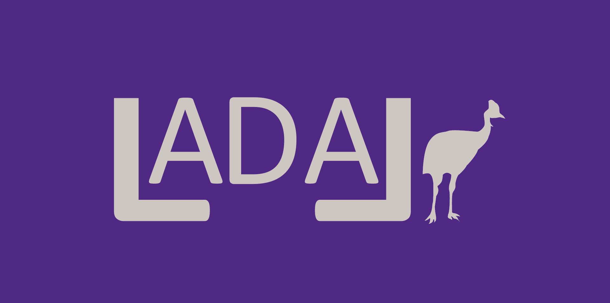
LADAL and its collaborators offer workshops of matter relating to text analytics, statistics, data visualization, and related topics. This page contains links, information, and details about upcoming and past workshops offered by LADAL or its collaborators and partners. Also, LADAL members present their research or information relevant to LADAL at conferences. Below are links to upcoming events (conferences/workshops/presentations) and presentations containing information about LADAL or research based on LADAL.
Below you will find the details of the workshops offered by LADAL or Australian Text Analytics Platform (ATAP) or its collaborators and partners.
DCS workshop Introduction to Computational Text Analytics
Date: 23-24 May 2024
Context: UQ Digital Cultures and Societies Hub
Do you have more text than you know what to do with? Did you collect data including text for your project and now feel overwhelmed when you try to analyse? Is there too much? Are you doing the same thing over and over again and feeling like you’re not using your time efficiently? Are you worried about missing the forest for the trees (or the trees for the forest)? If any of these apply to you (or you’re just interested in learning more) this workshop is for This workshop will introduce the fundamentals of computational text analysis using LADAL. We’ll start with the key questions of why and where computational methods might be appropriate for your work before moving onto the how. For the how we will:
Outline the necessary preparation and preconditions for using computational approaches to text.
Introduce you to the R programming language with Jupyter notebooks.
Guide you through using a series of common methods and libraries in R so you can start asking the right questions for your own projects.
Tie everything back together with a discussion of the practical aspects of managing projects with computational components grounded in our research experiences.
Conference workshop Text Analytics for Humour Studies
Date: 9 February 2024
Context: Australian Humour Network 2024 Conference
This workshop showcases the use of text analytics for humor studies using resources of the Language Technology and Data Analysis Laboratory (LADAL). We This workshop explores a variety of techniques and concepts and offer expert advice on data processing, analytics, and visualization,. Don’t miss this opportunity to discover the potential of text analytics to elevate your approach to humor studies.
AcqVA Aurora Workshop Advanced Dimension-Reduction Methods and Using Online Computing for Transparent Research
Date: 16 January 2024
Context: AcqVA Aurora workshop
Join this half-day workshop on advanced dimension reduction methods (t-SNE and UMAP) and creating interactive Jupyter notebooks.
This workshop will show you how to implement t-SNE and UMAP methods for reducing the number of dimensions in your data and how you can generate and make use of Jupyter notebooks from your R notebooks, and make use of GitHub and Binder to convert them into publicly accessible, interactive notebooks that allow others to reproduce your analysis by the push of a button. By combining Jupyter notebooks with Binder and GitHub, you can enhance transparency, reproducibility, and make use of online computing capabilities, allowing you to easily share and replicate analyses.
Through hands-on exercises and examples, participants will acquire the skills to
Perform t-SNE and UMAP dimension reduction
create reproducible Jupyter notebooks from their R notebooks
connect their RStudio projects to GitHub and push the contents of their project folders to GitHub
Use Binder to convert a GitHub repository into interactive, publicly accessible notebooks that other can use to interactively reproduce analyses and even edit and change code to explore the data and analyses.
Note: Basic knowledge of R and familiarity with Jupyter notebooks are recommended. Having a GitHub account is mandatory. Please bring your laptop with RStudio installed, along with relevant linguistic datasets for hands-on exercises.
ResBazQld workshop Unlock the power of text analytics with LADAL
Date: 22 November 2023
Context: Research Bazaar Queensland, 2023
Join us for a practical workshop where you’ll explore the capabilities of text analytics using the resources provided by the Language Technology and Data Analysis Laboratory (LADAL). Through hands-on demonstrations in R, you’ll gain essential skills in natural language processing and learn how to extract valuable insights from text data. Discover diverse approaches and concepts that will empower your research. Plus, get practical advice on data processing, analytics, and visualisation to elevate your research with LADAL’s text analytics resources.
AcqVA Aurora workshop Dimension Reduction Methods for Linguistic Data Analysis
Date: 25 August 2023
Context: AcqVA Aurora workshop
Resources: GitHub Repo, intercative Jupyter notebook
Join this half-day workshop on dimension reduction methods for linguistic data analysis to explore how Principal Component Analysis (PCA), Multidimensional Scaling (MDS), and Factor Analysis (FA), can enhance your understanding of linguistic data.
In this workshop, we will discuss basic concepts and principles behind dimension reduction methods and gain a basic understanding of their similarities and differences. In addition, we will explore practical applications of PCA, MDS, and FA, with a focus on their effectiveness in linguistic research, e.g., by enabling the identification of latent factors and dimensions that influence language variation and usage. Through interactive demonstrations and hands-on exercises, participants will gain practical experience in implementing dimension reduction methods. Learn how to interpret results, visualize reduced-dimensional representations, and effectively communicate findings.
Note: Basic knowledge of statistics and basic familiarity with R is required. Participants are encouraged to bring their laptops and send through sample data sets beforehand.
AcqVA Aurora workshop: From Tables to Forests
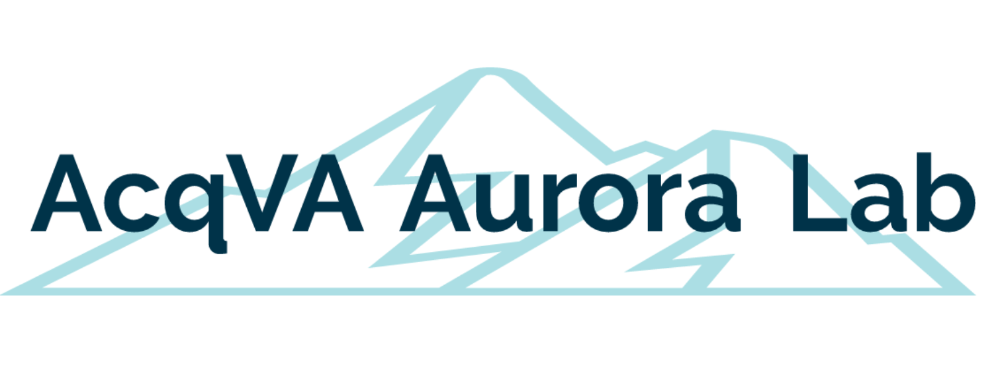
Date: 17 June 2022
This workshop consists of two parts. The first part of the workshop focuses on loading and working with tabular data R. In this part of the workshop, we will learn how to load, inspect, process, and summarize tabulated data. The second part of the workshop focuses tree-based models in R, such as conditional inference trees, random forests, and Boruta, which have become more prominent in the language science over the past decade. This part will discuss the underlying logic of tree-based models, how they can be implemented in R, as well as their strengths and weaknesses.
The materials for this workshop can be accessed via this GitHub repo and the rendered script is available here.
Network analysis and Topic Modeling on Twitter data using R
This online workshop is offered free to Australian researchers and research students and will cover:
- Introduction to network theory.
- Fundamental principles of using R for network analysis.
- Topic modeling of tweet text using R.
The data used for the workshop will be an open source dataset of Twitter data relating to the 2019 Federal Election.
Date: May 18 2022 Time: 9:00AM - 12:00PM AEST Venue: Online
Registration is required and the workshop is brought to you by the teams at the Australian Digital Observatory (ADO) and the Australian Text Analytics Platform (ATAP) via the Australian Research Data Commons (ARDC).
Monotreme Mania!
Comparative text analytics on Twitter data
This online workshop is offered free to Australian researchers and research students and will cover:
- Collecting and transforming Twitter data using twarc.
- Analysing the collected Twitter data using the R ecosystem for text analytics.
Register via Eventbrite
Update - 09/03/2022 The workshop is now fully booked. If you missed out, do check back next week in case of cancellations, and let us know if you’re keen for us to run the workshop again later.
Brought to you by the teams at the Australian Digital Observatory (ADO) and the Australian Text Analytics Platform (ATAP) via the Australian Research Data Commons (ARDC).
Power Analysis with R
Title: Power Analysis with R (pwr and simr)
Date: 1 February 2022
Event: AcqVA Aurora Lab Workshop
Length: 4 hours
Facilitators: Martin Schweinberger
Resources: GitHub Repo
Data Visualization with R (ggplot2 and likert)
Title: Data Visualization with R (ggplot2 and likert)
Date: 25 January 2022
Event: AcqVA Aurora Lab Workshop
Length: 4 hours
Facilitators: Martin Schweinberger
Resources: GitHub Repo
An introduction to Jupyter notebooks for text analysis
Title: An introduction to Jupyter notebooks for text analysis - Virtual workshop for absolute beginners
Date: 24 November 2021
Event: Digital Humanities Australasia 2021 Conference
Length: 3 hours
Facilitators: Sara King, Simon Musgrave
Best Practices in Corpus Linguistics
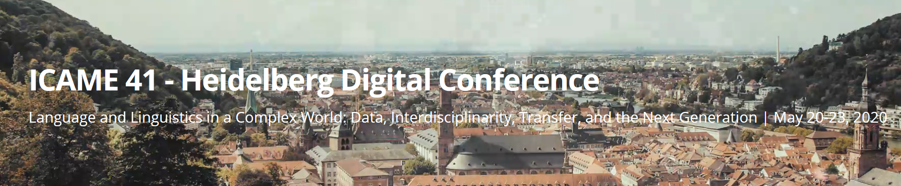
Title: Best Practices in Corpus Linguistics – What lessons should we take from the Replication Crisis and how can we guarantee high quality in our research?
Date: 20–24 May 2020
Event: ICAME 41 (41th Meeting of the International Computer Archive of Modern and Medieval English). Heidelberg, Germany.
Speaker: Martin Schweinberger
The Language Technology and Data Analysis Laboratory (LADAL)
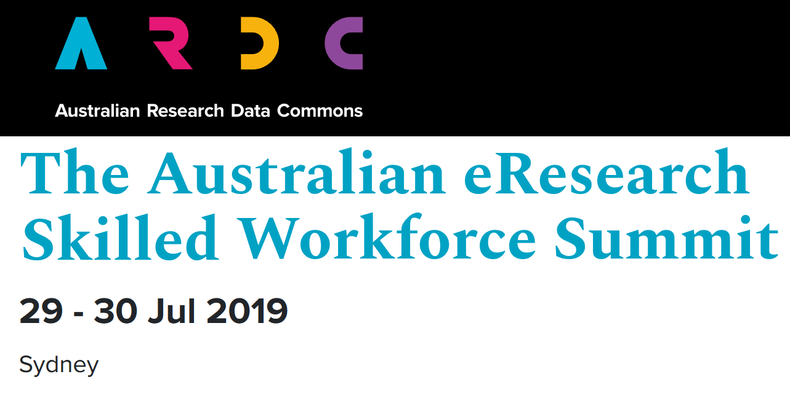
Title: Implementing school-based support infrastructure for digital humanities research at UQ - The Language Technology and Data Analysis Laboratory (LADAL)
Date: 30 October 2019
Speakers: Michael Haugh & Martin Schweinberger
Presentation at the Australian Research Data Commons (ARDC): The Australian eResearch Skilled Workforce Summit. Sydney, Australia, 29-30/7/2019.
Materials: slides
Using R for Corpus Linguistics
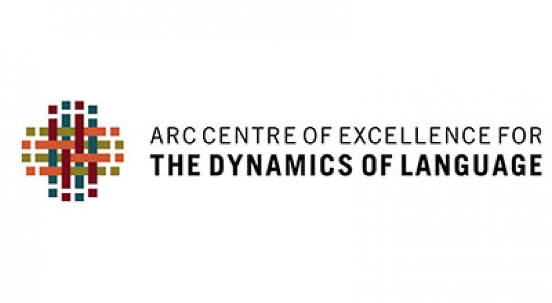
Title: Using R for Corpus Linguistics – an Introduction and Discussion Note on Sustainability and Replicability in Corpus Linguistics
Date: 2 April 2019
Speaker: Martin Schweinberger
Presentation at the Center of Excellence for the Dynamics of Language (CoEDL) Corpus Workshop. Melbourne, Australia, 2–3/4/2019.
Materials: slides
Panles
Computational Thinking in the Humanities
The workshop Computational Thinking in the Humanities was a 3-hour online workshop featuring two plenary talks, lightning presentations, as well as a panel discussion. The workshop is co-organized by the Australian Text Analytics Platform (ATAP), FIN-CLARIAH and its UEF representatives, and the Australian Digital Observatory.
The workshop has received financial supported from the Digital Cultures and Societies Hub at the University of Queensland.
The workshop took place
Thursday, Sep. 1, 2022, 5-8pm Queensland, 10am-1pm Finland, 8-11am UK.
Event Description
Computers and software are now inescapable in our daily lives - while much of our research might now be enabled or mediated by these computers, that doesn’t mean that our research practices have fundamentally changed - a digital library is still recognisable as a library.
- What does computational thinking mean for the humanities?
- How can the humanities embrace computing and computational approaches on their own terms, and avoid simply scavenging and repurposing approaches developed within other fields?
- How do we resist having our “problems” “solved” for us?
- What are the methodological and epistemological foundations of a field that is both computational and of the humanities - does computation actually change the nature of what we do?
This international workshop will bring together speakers to address this topic, drawing on perspectives from several fields. We hope that this event will prompt reflection, introduce new ideas, spark discussions and plant the seeds for future collaborations.
Program
Part I (90 min, start 17:00 Queensland, 10:00 Finland, 8:00 UK)
Opening and Introductions
Plenary 1: Krista Lagus: Bridging the impossible - How to avoid bringing technodystopia to the social sciences [Watch on YouTube]
Plenary 2: Barbara McGillivray: Computational approaches and the Humanities: what might await us? [Watch on YouTube]
Break
Part 2 (80 mins, start 18:30 Queensland, 11:30 Finland, 9:30 UK)
- Lightning talks (10 mins + 2 mins time for changing presenters)
- Marissa Takahashi (QUT, Project Manager of the Australian Digital Observatory (ADO)) [Watch on YouTube]
- Martin Schweinberger (UQ, co-director of LADAL) [Watch on YouTube]
- Eetu Mäkelä (technical director of FIN-CLARIAH) [Watch on YouTube]
- Steven Coats (University of Oulu) [Watch on YouTube]
- Panel discussion (20 min)
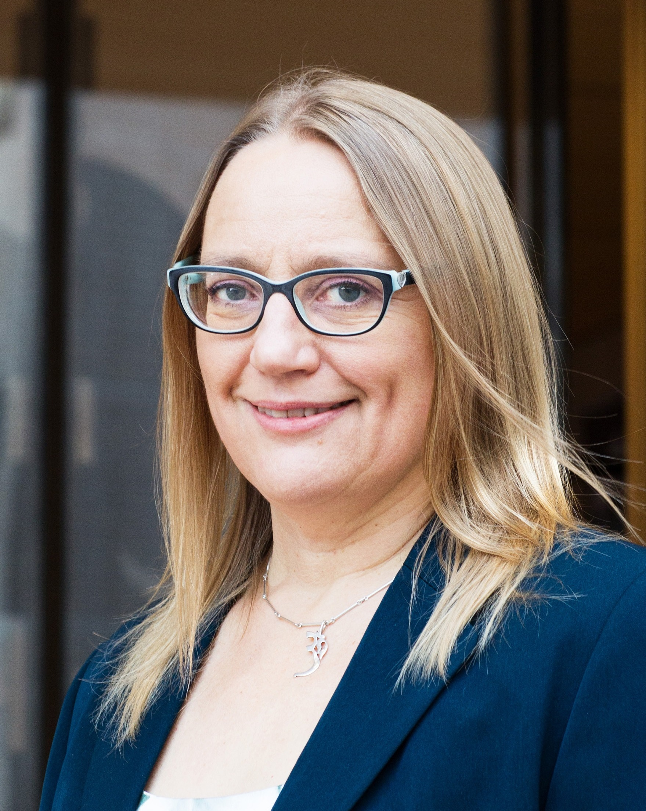
Krista Lagus
Krista is full professor at the University of Helsinki in the Centre for Social Data Science, CSDS. There, she applies quantitative and qualitative data analysis methods in order to understand various individual and social practices that affect the well-being of individuals. Recent topics of interest include loneliness, peer support, mindfulness practices and life-philosophical lecturing.
Barbara McGillivray
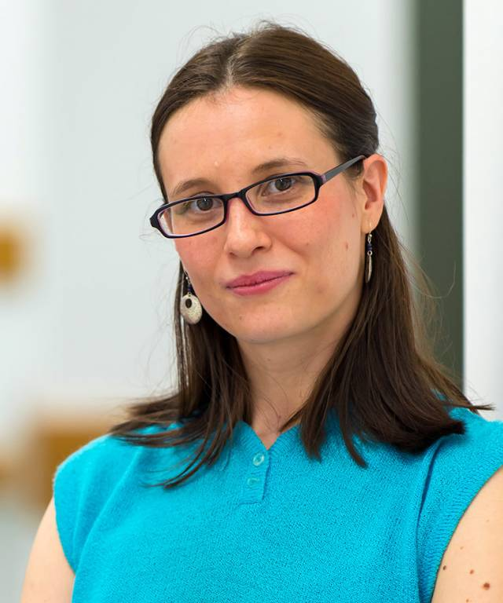
Barbara is lecturer in Digital Humanities and Cultural Computation at the Department of Digital Humanities of King’s College London and a Turing Research Fellow at The Alan Turing Institute. She is also Editor in Chief of the Journal of Open Humanities Data. Before going back to academia, Barbara was language technologist in the Dictionary division of Oxford University Press and data scientist in the Open Research Group of Springer Nature.
Barbara has always been passionate about how the sciences and the humanities can meet. Her most recent book is Applying Language Technology in Humanities Research. Design, Application, and the Underlying Logic, co-authored with Gábor Mihály Tóth and published by Palgrave Macmillan in 2020.
Webinar Series
LADAL Webinar Series 2022
The LADAL Webinar Series 2022 consists of 6 webinars | online presentations from speakers with backgrounds in linguistics, data science, or computational humanities and it covers topics related to the computational handling of language data! All recordings of the webinar series are available on the LADAL YouTube channel.
Details about upcoming and past webinars that are part of the LADAL Webinar Series 2022 can be found below.

All events were announced on Twitter (@slcladal), via the UQ School of Languages and Cultures, and via our collaborators) - so please follow us if you like to catch up with the activities at LADAL. Below are links to recordings of past webinars on our YouTube channel.
Spread of Lexical Innovations (Jack Grieve)
Archives as Subject not Source (Cedric Courtois)
Analyzing Longitudinal Data (Dimitrios Vagenas)
Bayesian GLMMs with brms (Bodo Winter)
Below you will find the details of the webinars including abstracts, bioblurbs of the speakers, and additional resources.Please note that we have only included confirmed webinars | online presentations at the moment - so more webinars and online presentations will be added once they are confirmed! Stay put and check this space if you want to find out more.
Spread of Lexical Innovations (Jack Grieve)
The Spread of Lexical Innovation is Constrained by Cultural Patterns
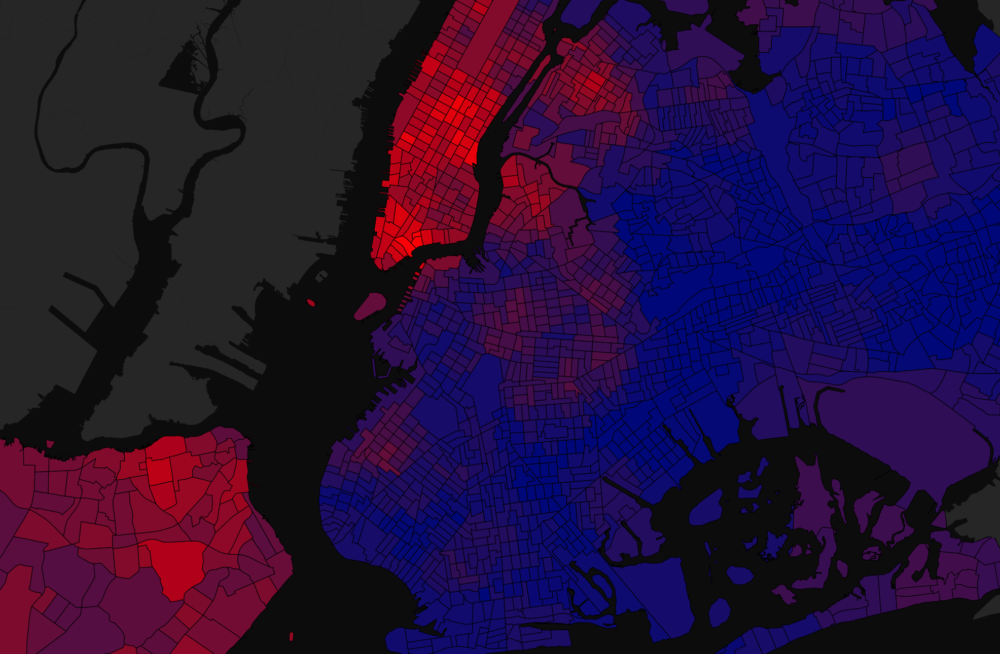
This talk was recorded March 7, 2022, as part of the LADAL Webinar Series 2022.
Recording link: https://youtu.be/sW70Y6XDiRA
Abstract
In this talk I discuss the results of three studies on the geographical diffusion of lexical innovation, all of which are based on the analysis of multibillion word corpora of Twitter data collected between 2013 and 2014. In this first study, I track the spread of new words across the US. In the second study, I zoom in and look at how these same words spread out across New York City. In the third study, I consider how lexical items from Multicultural London English have diffused across the UK. In all cases, I show that the spread of lexical innovation is not only constrained by physical distance and population density, as predicted by the Wave and Gravity Models, but by cultural patterns and boundaries.
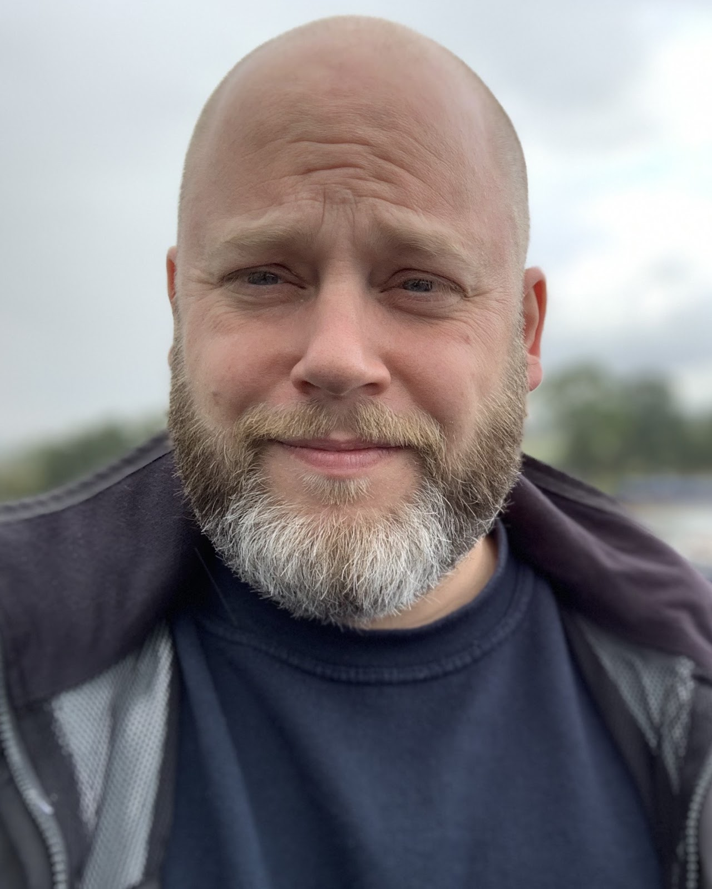
About Jack
Jack Grieve is Professor of Corpus Linguistics at the University of Birmingham and Turing Fellow at the Alan Turing Institute. His research involves analysing large corpora of natural language to understand language variation and change. He is especially interested in grammatical and lexical variation in the English language across time, space and communicative context, as well as developing methods for quantitative linguistic analysis. Jack also conducts research on authorship analysis and sometimes consult on casework as a forensic linguist. You can get in touch with Jack at j.grieve@bham.ac.uk or via his Twitter handle @JWGrieve.
Archives as Subject not Source (Cedric Courtois)
The Archive as Subject rather than Source: a Roadmap to Constructing and Disseminating a Digital Archive
This talk was recorded May 9, 2022, as part of the LADAL Webinar Series 2022.
Recording link: https://youtu.be/-dcwbKZuzDU
Abstract
Archives are valuable resources in historical media and communication research. Unfortunately, many collections are hard to find and access, and have not been properly digitised and described. In this paper we argue that computational methods are instrumental in engaging with and digitising archive materials, even though these methods introduce problems of their own. More specifically, we articulate critical thinking on the concept of ‘the archive’ with a discussion of the key decisions and practical hurdles encountered in the construction and digitisation of an archive. This is illustrated by a mid-sized project based on records of communications between the Pentagon and CIA Entertainment Liaison Offices (ELO) and audiovisual productions companies around the world, which are key in revealing influence of the US military on the entertainment industry. However, rather than discussing every step in the project in minute detail, we maximise the relevance for a broad readership by distilling a generic roadmap and key recommendations that cover all stages of strategic decision-making in archive construction and digitisation, as well as demonstrating the required generic technical implementations.
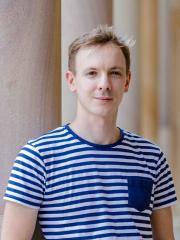
About Cedric
Cedric Courtois is a senior lecturer in the School of Communication and Arts in the Faculty of Humanities and Social Sciences at the University of Queensland. He is both an audience researcher and a methodologist. His research interests include algorithmic impact in digital culture and data science applications in (digital) media and communication research (including text mining and image processing).
Analyzing Longitudinal Data (Dimitrios Vagenas)
Analyzing Longitudinal Data
This talk was recorded July 4, 2022, as part of the LADAL Webinar Series 2022.
Recording link: https://youtu.be/oKZHRHqU0YY
Zoom link: https://uqz.zoom.us/j/86849442143
Abstract
The focus of the current seminar will be a (very) brief introduction to longitudinal data and their analysis focusing on regression. To start with we will look at longitudinal data and different designs for collecting such data. We will then look at some empirical observations and why they occur before turning our attention to simple linear regression and why it is generally not appropriate to use it for the analysis of such data. Understanding the above is very important but also a neglected aspect of longitudinal data. We will then, very briefly, introduce two methods for appropriately analysing such data: (i) mixed models and (ii) Generalised Estimating Equations.
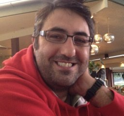
About Dimitrios
Dimitrios is a biostatistician and the head of the Research Methods Groups at the Queensland University of Technology. He is also the President of the QLD branch of the Statistical Society of Australia and a member of the Accreditation committee of the same society. He also holds the highest professional accreditation of the American Statistical Association and the Royal Statistical Society. He has also studied animal science, quantitative genetics, and digital biology. His main job is to help researchers do better research and he enjoys working in multidisciplinary teams.
The travels of Marco Polo (Andreas Niekler)
The travels of Marco Polo: Information extraction and visualization of historic travel literature
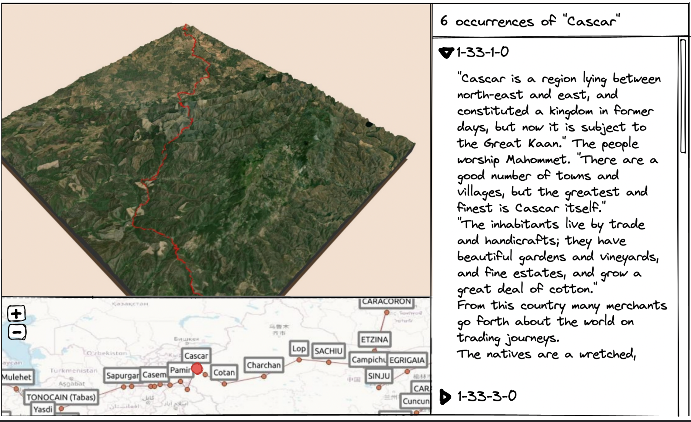
This talk was recorded September 26, 2022, as part of the LADAL Webinar Series 2022.
Recording link: https://youtu.be/oJFmw1Sy7iE
Abstract
Marco Polo was born into a wealthy Venetian merchant family in 1254 and at the age of 17 he embarked on an epic journey to Asia, as one of the first westerners to ever visit China. When he returned 24 years later he recorded his extensive travels in a book – publishing possibly the first travel guide ever – and introducing Europeans to Central Asia and China.
In our talk we show our preliminary work on the analysis of travel literature using Marco Polo’s travel diaries as an example. First, we show the annotation and automatic extraction of important landmarks. On the other hand, we propose an extraction procedure that can uncover possible movements and route segments from the text. This is complemented by a geo-visualization that does not only show a map, but rather works with the spatial situation and terrain models, so that the landscape context can provide complementary information for the text itself. With this work we hope to contribute to a better understanding of historical journeys.
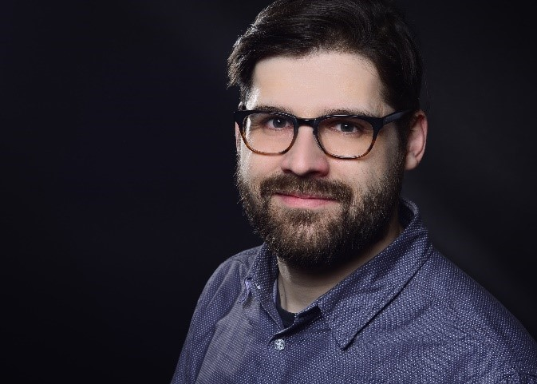
About Andreas
Andreas Niekler is a research associate at the Institute of Computer Science at the University of Leipzig. He develops computer-based methods in the field of semantic properties in language and language-based AI. He develops computer-based algorithmic methods for computational social science and digital humanities research. Here he has contributed primarily text mining methods to political science, cultural studies, and communication research. Within several research projects he was also involved in the development of the interactive Leipzig Corpus Miner. An interactive and graphical tool for intuitive work with large text corpora and modern methods of text mining.
Bayesian GLMMs with brms (Bodo Winter)
Bayesian generalized linear mixed models with brms
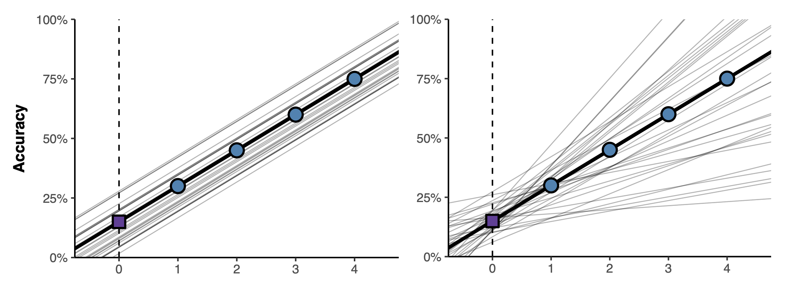
This talk was recorded November 7, 2022, as part of the LADAL Webinar Series 2022.
Recording link: https://youtu.be/UwIgWD5pWzQ
Abstract
Linguistics is undergoing a rapid shift away from significance tests towards approaches emphasizing parameter estimation, such as linear mixed effects models. Alongside this shift, another revolution is underway: away from using p-values as part of a “null ritual” (Gigerenzer, 2004) towards Bayesian models. Both shifts can nicely be dealt with the ‘brms’ package (Bürkner, 2017). After briefly reviewing why we shouldn’t blindly follow the “null ritual” of significance testing, I will demonstrate how easy it is to fit quite complex models using this package. I will also talk about how mixed models are used in different subfields of linguistics (Winter & Grice, 2021), and why established practices such as dropping random slopes for non-converging models are a further reason to go Bayesian. Finally, I will briefly touch on issues relating to prior specification, especially the importance of weakly informative priors to prevent overfitting.
About Bodo
Bodo Winter is a Senior Lecturer at the Department of Linguistics at the University of Birmingham, a UKRI Future Leaders Fellow, a Fellow of the Institute for Interdisciplinary Data Science and AI, and Editor-in-Chief at the journal Language and Cognition. Dr. Winter has received his PhD in Cognitive and Information Sciences from the University of California, Merced. His research focuses on multimodality, sound symbolism, gesture, and metaphor.
Found in Translation (Jörg Tiedemann)
Found in Translation - What can we learn from translations about languages and human communication
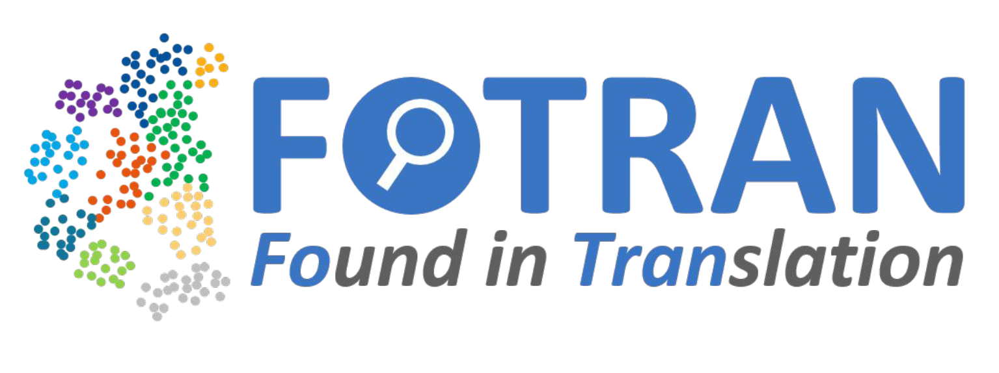
This talk was recorded December 5, 2022, as part of the LADAL Webinar Series 2022.
Recording link: https://youtu.be/feF987aX5s8
Abstract
The goal of language technology is to create computational models that can understand and generate language in a way humans can do. One of the strategies is to learn such communication abilities from real-world data and in that way somewhat resemble humans and their capability of picking up language skills through practical experience. However, the crucial question is what kind of experience is needed and what kind of tasks have to be practiced to build an understanding of human language signals. We are currently running a project that studies the use of translations that form natural semantic mirrors of original texts in other languages as a means of providing information about the underlying latent meaning that corresponds to the observable language string. The big question is what kind of abstractions can be learned from this cross-lingual signal and how much does that reflect our knowledge about linguistic properties on various levels. Part of this question is how much language diversity can be used to push abstraction levels even further. In this talk I will present some of our results and try to connect this kind of neural “black-box” NLP with questions in general linguistics and cognition.
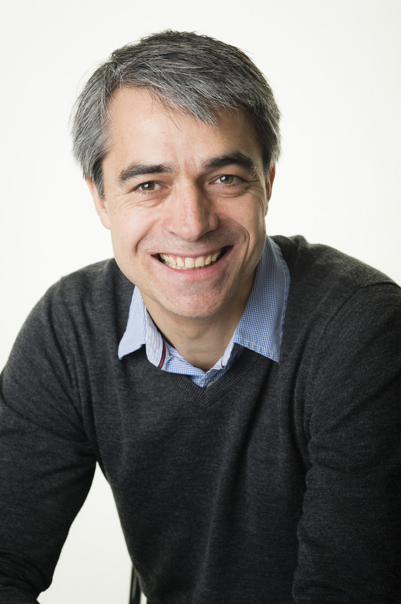
About Jörg
Jörg Tiedemann is professor of language technology at the Department of Digital Humanities at the University of Helsinki. He received his PhD in computational linguistics for work on bitext alignment and machine translation from Uppsala University before moving to the University of Groningen for 5 years of post-doctoral research on question answering and information extraction. His main research interests are connected with massively multilingual data sets and data-driven natural language processing and he currently runs an ERC-funded project on representation learning and natural language understanding.
Website: https://blogs.helsinki.fi/tiedeman/
Griffith Digital Humanities Webinar Series
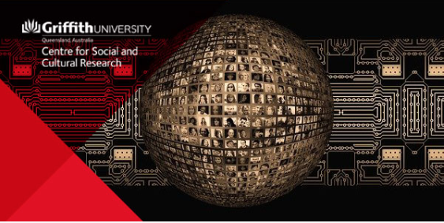
Martin Schweinberger and Michael Haugh presented about ATAP and LADAL at the Griffith Digital Humanities Webinar Series on Friday May 20, 2022. For more information about this webinar series and the Griffith Centre for Social and Cultural Research see here.
LADAL Webinar Series 2021 (LADAL Opening)
The LADAL Opening Webinar Series 2021 consists of 25 webinars or online presentations from a wide range of voices with backgrounds in linguistics, data science, or computational humanities and it covers a variety of topics related to digital handling of language data! All recordings of the webinar series are available on the LADAL YouTube channel.
All events were announced on Twitter (@slcladal), via the UQ School of Languages and Cultures, and via our collaborators) - so please follow us if you like to catch up with the activities at LADAL. The LADAL Opening Webinar Series 2021 kicked off with a presentation by Stefan Th. Gries on MuPADRF (Multifactorial Prediction and Deviation Analysis Using Regression/Random Forests) on June 3, 2021, 5pm Brisbane time. See below for the full list of presentations that are part of the LADAL Opening Webinar Series 2021.
Recordings on YouTube
LADAL & ATAP (M. Schweinberger & M. Haugh)
Data Collection in the Field (F. Meakins)
The UZH Text Crunching Center (G. Schneider)
Corpus-Based Media Linguistics (M. Bednarek)
Bayesian vs Frequentist (N. Levshina)
Online Data Collection (M. Vos)
Reproducible Research (A. Miotto & J. Toohey)
Neurolinguistics of Bilingualism (V. DeLuca, T. Voits & J. Rothman)
Introducing Network Analysis (S. Musgrave)
Speech Recognition with Elpis (J. Wiles & B. Foley)
Societal Big Data (M. Laitinen)
Tackling Social Media Data (S. Hames)
Data-Driven Learning (P. Crosthwaite)
Text Classification & Hate Speech (G. Wiedemann)
VARIENG (T. Nevalainen, T. Hiltunen & A. Liimatta)
Distributional Semantics (G. Desagulier)
Usage-Based Language Learning (L. Janda)
Analyzing Historical Publications (T. Säily)
Replicability & Robustness (J. Flanagan)
Linguistic Phylogenetics (J. Macklin-Cordes & E. Round)
Analyzing Emigrant Letters (C. P. Amador-Moreno)
USER STORIES
We are currently looking for user stories (also known as testimonials) to see and show what people use LADAL resources for. If you have used LADAL resources - be it by simply copying some code, attending a workshop, learning about a method using a tutorial, or in any other way - we would be extremely grateful, if you would send us your user story!
To submit your user story, simply write up a paragraph describing how you have used LADAL resources and what you have used them for and send it to ladal@uq.edu.au. We really appreciate any feedback from you about this!
MuPADRF (S. Th. Gries)
MuPADRF (Multifactorial Prediction and Deviation Analysis Using Regression/Random Forests)
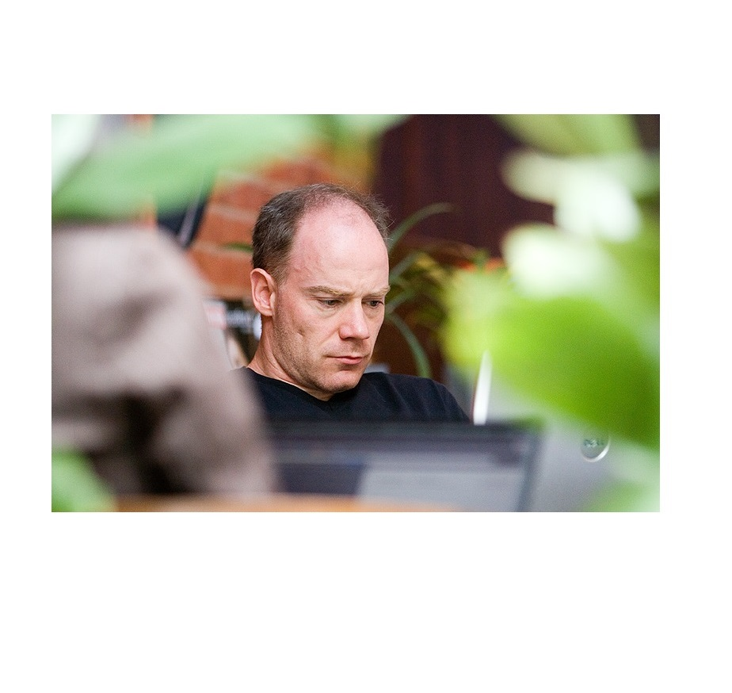
This talk was recorded June 3, 2021, as part of the LADAL Opening Webinar Series 2021.
Recording link: https://www.youtube.com/watch?v=cLocET9CC-E&t=253s
Abstract
In this talk, Stefan gave a brief and relatively practical introduction to an approach called MuPDAR(F) (for Multifactorial Prediction and Deviation Analysis using Regressions/Random Forests) that he developed (see Gries and Deshors, Gries and Adelman for the first applications). The main part of the talk involved using a version of the data in Gries and Adelman to exemplify how this protocol works and how it can be done in R. Second, Stefan discussed a few recent extensions proposed in Gries and Deshors and Gries (n.d.), which have to do with
how to deal with situations with more than two linguistic choices,
how predictions are made, and
how deviations are quantified.
Finally, he briefly comment on exploring individual variation among the target speakers (based on Gries and Wulff).
how to deal with situations with more than two linguistic choices,
how predictions are made, and
how deviations are quantified.
About Stefan
Stefan Th. Gries is full professor at the University of California, Santa Barbara (UCSB), as well as Honorary Liebig-Professor and Chair of English Linguistics at the Justus-Liebig-Universität Giessen. Stefan has held several prestigious visiting professorships at top universities and, methodologically, he is a quantitative corpus linguist at the intersection of corpus linguistics, cognitive linguistics, and computational linguistics. Stefan has applied a variety of different statistical methods to investigate a wide range of linguistic topics and much of his work involves the open-source software R. Stefan has produced more than 200 publications (articles, chapters, books, and edited volumes), he is an active member of various editorial boards as well as academic societies.
LADAL & ATAP (M. Schweinberger & M. Haugh)
The Australian Text Analytics Platform (ATAP) and the Language Technology and Data Analysis Laboratory (LADAL) - building computational humanities infrastructures: experiences, problems, and potentials

This talk was recorded June 10, 2021, as part of the LADAL Opening Webinar Series 2021.
Recording on YouTube: https://www.youtube.com/watch?v=qGIGCubyJs0
Abstract
This talk introduces the Language Technology and Data Analysis Laboratory (LADAL) which is a computational humanities resource infrastructure maintained by the School of Languages and Cultures at the University of Queensland. The talk will also provide information about its relations to the Australian Text Analytics Platform (ATAP) which represents an effort to promote text analytics in Australia and to make resources for using text analytics available to a wider community of researchers.
About Martin
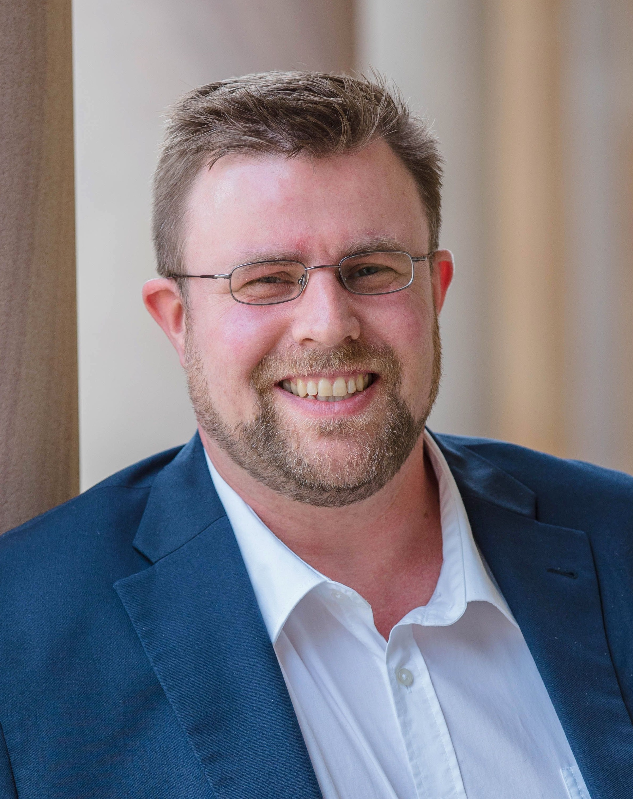
Martin Schweinberger is a language data scientist with a PhD in English linguistics who has specialized in corpus linguistics and quantitative, computational analyses of language data. Martin is a Lecturer in Applied Linguistics at the University of Queensland, Australia where he has been establishing the Language Technology and Data Analysis Laboratory (LADAL) and he holds an additional part-time Associate Professorship in the AcqVA-Aurora Center at the Arctic University of Norway in Tromsø.
About Michael
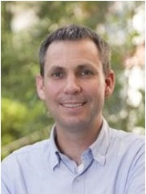
Michael Haugh is Professor of Linguistics and a Fellow of the Australian Academy of the Humanities. His research interests lie primarily in the field of pragmatics, the science of language-in-use. He works with recordings and transcriptions of naturally occurring spoken interactions, as well as data from digitally-mediated forms of communication across a number of languages. An area of emerging importance in his view is the role that language corpora can play in the humanities and social sciences more broadly. He has been involved in the establishment of the Australian National Corpus and the Language Technology and Data Analytics Lab, and is currently leading the establishment of a national language data commons.
Data Collection in the Field (F. Meakins)
Field-based methods for collecting quantitative data
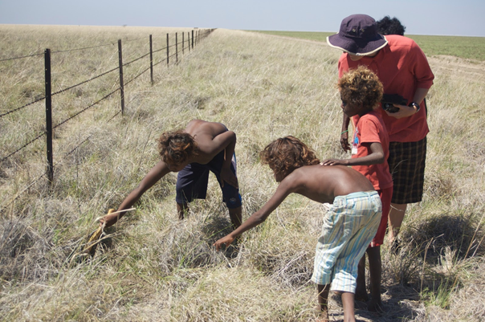
This talk was recorded June 18, 2021, as part of the LADAL Opening Webinar Series 2021.
Recording on YouTube: https://youtu.be/BGa0gkkkWsc
Abstract
Shana Poplack has set benchmarks for the development of corpora since the early 1980s. Poplack (2015, p. 921) maintains that the “gold standard remains the (standard sociolinguistic-style) … corpus”. The aim of producing corpora using these principles is to avoid the ‘cherry picking’ approach which dominates much of the theoretical literature. Poplack and her team have created the Ottawa-Hull Corpus which consists of 3.5 million words of informal speech data. This corpus is enormous and beyond the capabilities of a single linguist in a small language community. This talk offers suggestions for corpus development in the field that follow Poplack’s principles, but also shows where compromises can be made. I discuss the method developed during the Gurindji Kriol project called ‘peer elicitation’. It supplements Poplack’s gold standard of naturally occurring speech with semi-formal elicitation to ensure sufficient data for quantitative analyses.
About Felicity
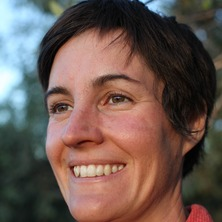
Felicity Meakins is an ARC Future Fellow in Linguistics at the University of Queensland and a CI in the ARC Centre of Excellence for the Dynamics of Language. She is a field linguist who specialises in the documentation of Australian Indigenous languages in the Victoria River District of the Northern Territory and the effect of English on Indigenous languages. She has worked as a community linguist as well as an academic over the past 20 years, facilitating language revitalisation programs, consulting on Native Title claims and conducting research into Indigenous languages. She has compiled a number of dictionaries and grammars of traditional Indigenous languages and has written numerous papers on language change in Australia.
The UZH Text Crunching Center (G. Schneider)
Text Crunching Center (TCC): Data-driven methods for linguists, social science and digital humanities
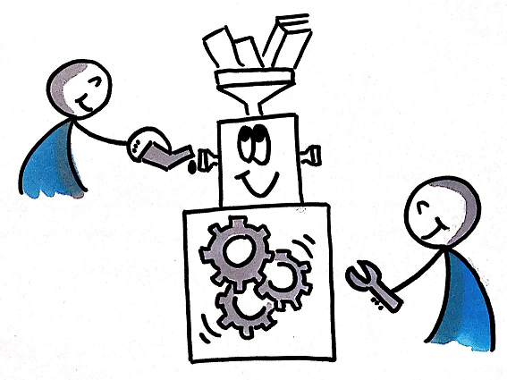
This talk was recorded June 24, 2021, as part of the LADAL Opening Webinar Series 2021.
Recording on YouTube: https://youtu.be/2_l3ViTzBOM
Abstract
This talk introduces the Text Crunching Centre (TCC) which is a Computational Linguistics and Digital Humanities service hosted at the University of Zurich, and a collaboration partner of LADAL. We present a selection of our case studies using text analytics, from cognitive linguistics, social, political and historical studies. We show how stylistics, document classification, topic modelling, conceptual maps, distributional semantics and eye-tracking can offer new perspectives. Our case studies include language and age, learner language, the history of medicine, democratisation, religion, and attitudes to migration. We conclude with an outlook to the future of text analytics.
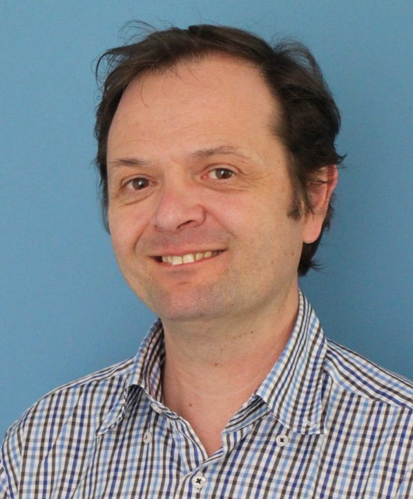
About Gerold
Gerold Schneider is a Senior Lecturer, researcher and computing scientist at the department of Computational Linguistics at the University of Zurich, Switzerland. His doctoral degree is on large-scale dependency parsing, his habilitation on using computational models for corpus linguistics. His research interests include corpus linguistics, statistical approaches, Digital Humanities, text mining and language modeling. He has published over 100 articles on these topics. He has published a book on statistics for linguists (Schneider and Lauber), and a book on digital humanities is under way. His Google scholar page can be accessed here.
Corpus-Based Media Linguistics (M. Bednarek)
Corpus-based media linguistics: A case study of linguistic diversity in Australian television
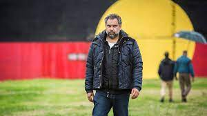
This talk was recorded July 1, 2021, as part of the LADAL Opening Webinar Series 2021.
Recording on YouTube: https://youtu.be/g54yLpYefbI
Abstract
In this golden age of Indigenous television (Sebbens 2020, February 2), it is important to analyze Indigenous-authored drama series, so that we can move beyond ‘a deficit perspective’ (Charity Hudley, Mallison, and Bucholtz, 216) in relation to mediated linguistic diversity. This talk presents a corpus linguistic case study of Australian Aboriginal English (AAE) lexis as present in three such Indigenous-authored television series: Redfern Now, Cleverman, and Mystery Road. For television viewers, mediated AAE can be an important source of information, especially if they do not regularly interact with Aboriginal and/or Torres Strait Islander people. This would be the case for many Australians, and even more so for international viewers of Australian television series. All three analyzed series were exported overseas and thus have both Australian and international audiences. Using lexical profiling analysis [AntWordProfiler; Anthony] in combination with qualitative concordance analysis, the talk identifies and compares the use of AAE lexis across the three series. Analysis of frequency and distribution will pinpoint words that appear to be particularly significant lexical resources in mediated AAE. The talk will be framed through the notion of diversity, as conceptualised in relation to television series.
About Monika
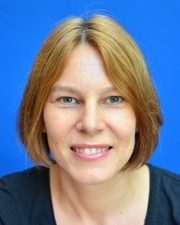
Monika Bednarek is Professor of Linguistics at the University of Sydney and Director of the Sydney Corpus Lab. Her research uses corpus linguistic methodologies across a variety of fields, including media linguistics, discourse analysis and sociolinguistics. She has a particular interest in the linguistic expression of emotion and opinion, with a focus on English. Monika is the author or co-author of six books and two short volumes as well as numerous journal articles and book chapters. She has co-edited several edited volumes and special issues of journals, most recently Corpus approaches to telecinematic language (International Journal of Corpus Linguistics 26/1, 2021) and Corpus linguistics and Education in Australia (Australian Review of Applied Linguistics 43/2, 2020). She is on the steering committee of the Asia Pacific Corpus Linguistics Association and tweets @corpusling.
Bayesian vs Frequentist (N. Levshina)
Recycle, relax, repeat: Advantages of Bayesian inference in comparison with frequentist methods
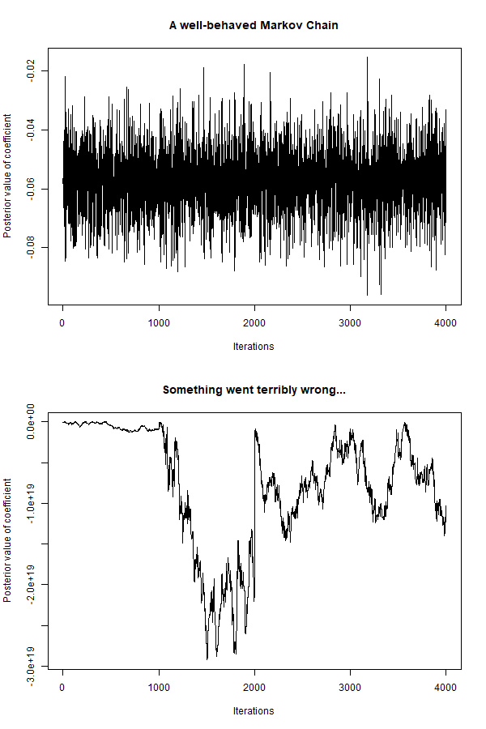
This talk was recorded July 8, 2021, as part of the LADAL Opening Webinar Series 2021.
Recording on YouTube: https://youtu.be/vpsJj7Nkgw4
Resources
The slides for Natalia’s talk are available here. An Open Science Foundation (OSF) repository containing the R code and data used for the case study in this talk are available here. Here is a link to the GitHub repo of Shravan Vasishth (Professor for Psycholinguisics at the University of Potsdam) with additional resources on Bayesian statistics.
Abstract
Bayesian inference is becoming increasingly popular in linguistic research. In this talk I will compare frequentist (maximum likelihood) and Bayesian approaches to generalized linear mixed-effects regression, which is de facto the standard method for testing linguistic hypotheses about linguistic variation. The main advantages of Bayesian inference include an opportunity to test the research hypothesis directly, instead of trying to reject the null hypothesis. One can also use information from previous research as priors for subsequent models, which helps to overcome the recent crisis of reproducibility. This also enables one to use smaller samples. It helps to solve such problems as overfitting, data separation and convergence issues, which often arise when one fits generalized mixed-effect models with complex structure. These advantages will be illustrated by a multifactorial case study of help + (to-)infinitive in US magazines, as in the example These simple tips will help you (to) survive the Zombie apocalypse.
About Natalia
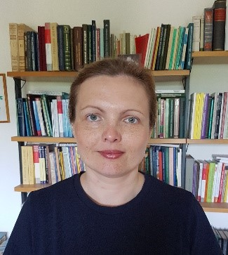
Natalia Levshina is a linguist working at the Max Planck Institute for Psycholinguistics in Nijmegen. Her main research interests are cognitive and functional linguistics, pragmatics, typology, corpora and data science. She obtained her PhD at KU Leuven in 2011 and got her habilitation qualification at Leipzig University in 2019 with a thesis Towards a theory of communicative efficiency. In addition to papers on causatives, differential case marking, politeness, word order variation and other linguistic topics, Natalia is the author of a best-selling statistical manual How to Do Linguistics with R (Levshina).Online Data Collection (M. Vos)
Gathering data and creating online experiments with jsPsych and JATOS
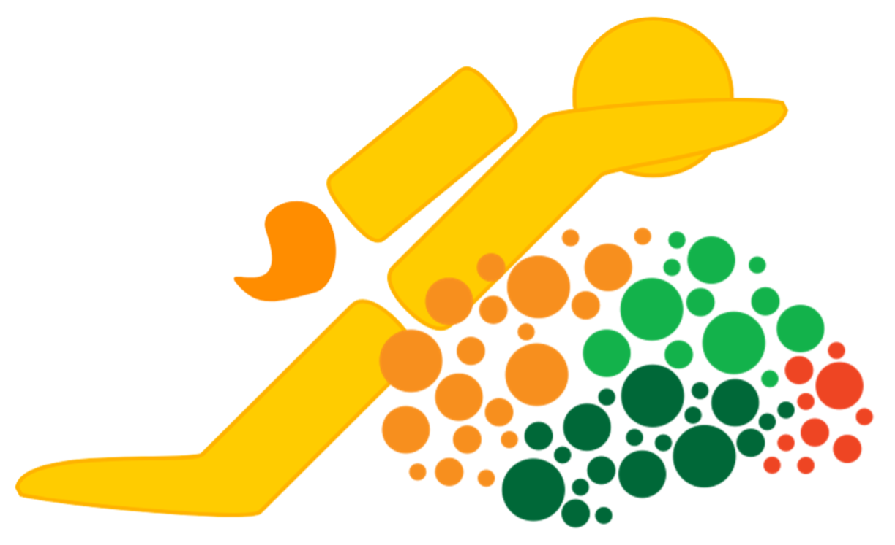
This talk was recorded July 15, 2021, as part of the LADAL Opening Webinar Series 2021.
Recording on YouTube: https://youtu.be/7-9WRYpXEtE
Resources: The materials, including scripts, files, etc., can be accessed via and downloaded from this GitHub repository.
Abstract
Web-based studies are an increasingly popular and attractive alternative to lab- and field-based studies, enabling remote data collection for a rapidly growing variety of (psycho-)linguistic methods ranging from acceptability judgment tasks and self-paced reading to interactive group designs and the Visual World paradigm. Most platforms for building and hosting online studies are proprietary and subscription-based (e.g., Gorilla, Pavlovia, and FindingFive), but there also exist various free, open-source tools for writing and managing studies on your own server. This talk gives a practical introduction to building and hosting studies using jsPsych (De Leeuw) and JATOS (Lange, Kühn, and Filevich), by demonstrating a speedrun of the entire process: from an empty file in a code editor, to distributing URLs to participants.
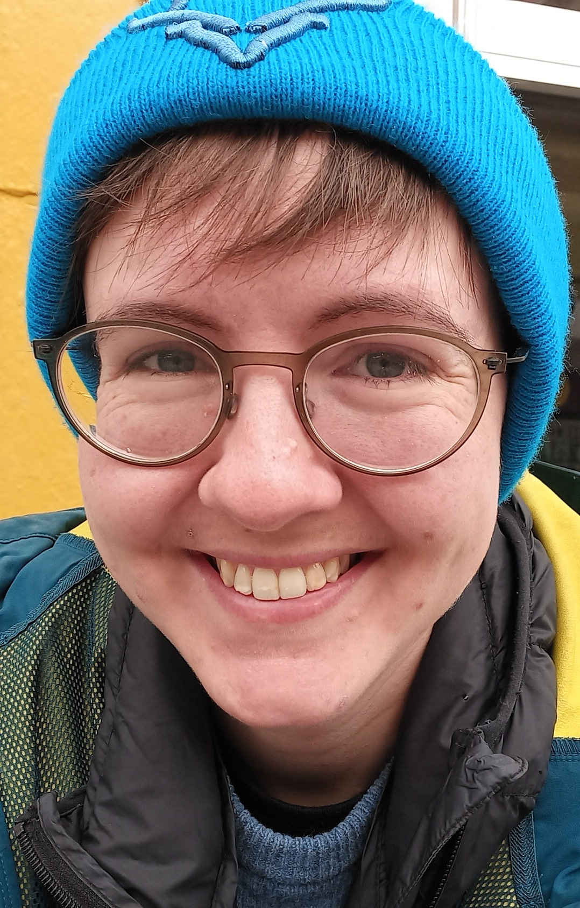
About Myrte
Myrte Vos (she/they) is a doctoral research fellow at the Arctic University of Norway (Tromsø). They’re supposed to be studying incremental processing of aspect and modality in English, but got sidetracked by figuring out how to do that using webcam-based eye tracking.
Reproducible Research (A. Miotto & J. Toohey)
Going down the Reproducible Research pathway: You have to begin somewhere, right?

This talk was recorded July 22, 2021, as part of the LADAL Opening Webinar Series 2021.
Recording on YouTube: https://youtu.be/bANTr9RvnGg
Resources: The materials that are mentioned in this presentation can be accessed via the following url: https://www.qcif.edu.au/training/course-catalogue/
Abstract
The idea that you can duplicate an experiment and get the same conclusion is the basis for all scientific discoveries. Reproducible research is data analysis that starts with the raw data and offers a transparent workflow to arrive at the same results and conclusions. However not all studies are replicable due to lack of information on the process. Therefore, reproducibility in research is extremely important.
Researchers genuinely want to make their research more reproducible, but sometimes don’t know where to start and often don’t have the available time to investigate or establish methods on how reproducible research can speed up every day work. We aim for the philosophy “Be better than you were yesterday”. Reproducibility is a process, and we highlight there is no expectation to go from beginner to expert in a single workshop. Instead, we offer some steps you can take towards the reproducibility path following our Steps to Reproducible Research self paced program.
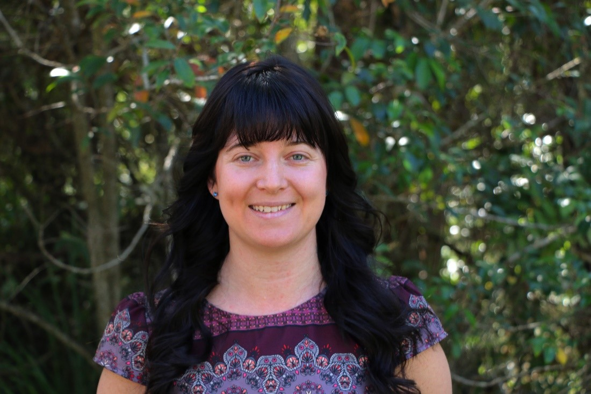
About Amanda
Amanda Miotto is an eResearch Analyst for Griffith University and QCIF. She started off in the field of Bioinformatics and learnt to appreciate the beauty of science before discovering the joys of coding. She is also heavily involved in Software Carpentry, Hacky Hours and ResBaz, and has developed on platforms around HPC and scientific portals.
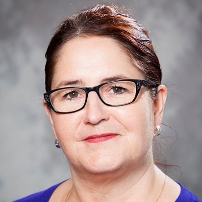
About Julie
Julie Toohey is a Library Research Data Management Specialist at Griffith University Library. Julie has an extensive career in academic libraries and is passionate about research data management practices. Previously, Julie co-facilitated the Australian National Data Services 23 Things (research data) Health and Medical Data Community series and is currently a member of the QULOC Research Support Working Party. Julie works closely with Griffith eResearch Services delivering education awareness programs around managing research data, reproducible research and working with sensitive data. Julie has co-authored several research data related publications with Griffith researchers and eResearch Services partners.
https://orcid.org/0000-0002-4249-8180
Neurolinguistics of Bilingualism (DeLuca, Voits & Rothman)
Neurocognitive effects of bilingual experience
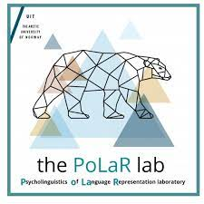
This talk was recorded July 28, 2021, as part of the LADAL Opening Webinar Series 2021.
Recording on YouTube: https://youtu.be/wVBkUSPQFUw
Abstract
Much research over the past two decades shows that bilingualism affects brain structure, function, and potentially domain-general cognition (see e.g., Bialystok; Pliatsikas). The specificity of these effects, however, has become the subject of significant debate in recent years, in large part due to variability of findings across studies (see Leivada et al. for review). In this talk, we will introduce our research programs within the Psycholinguistics of Language Representation (PoLaR) lab that addresses the juxtaposition of data and argumentation. Our work is guided by the principle that although bilingual effects are existent, they are conditional. In other words, bilingualism per se is not a sufficient condition for relevant effects on neurocognition. We will review our work that is generally designed to test the hypothesis that specific experience-based factors (EBFs) variably affect neural activity and plasticity in brain regions and pathways implicated in language- and executive control across the lifespan. We present results from a series of MRI studies showing a specificity of neural adaptations to different EBFs (DeLuca, Rothman, and Pliatsikas; DeLuca et al., ) in younger adults. We will also present data from older adults, showing similar EBF effects in healthy cognitive ageing (Voits, Robson, and Pliatsikas submitted) and with mild cognitive impairment (Voits et al. in prep.). EBFs related to duration of bilingual language use correlate to neurocognitive adaptations suggesting increased efficiency in language control, whereas those related to extent of additional language use correlate with adaptations suggesting increased control demands. Considered together, these data suggest that the brain strives to be maximally effective and efficient in language processing and control, which in turn affects domain-general cognitive processes proportionally to degree of engagement with bilingual experiences. The work in older populations leads to the conclusion that degree of engagement with bilingualism is a catalyst for cognitive/brain reserve and thus has some real-world benefits in aging.
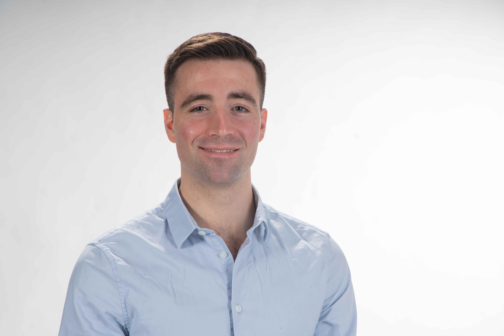
About Vince
Vincent DeLuca is Associate Professor in the Neurocognition of Bilingualism and co-director of the Psycholinguistics of Language Representation (PoLaR) lab in the AcqVa Aurora Centre at UiT-The Arctic University of Norway. His research is focused on how different aspects of bilingual language experience variably impact brain structure, function, and several cognitive processes. His work focuses on how these neural and cognitive adaptations dynamically shift over time and with changes to patterns of language use.
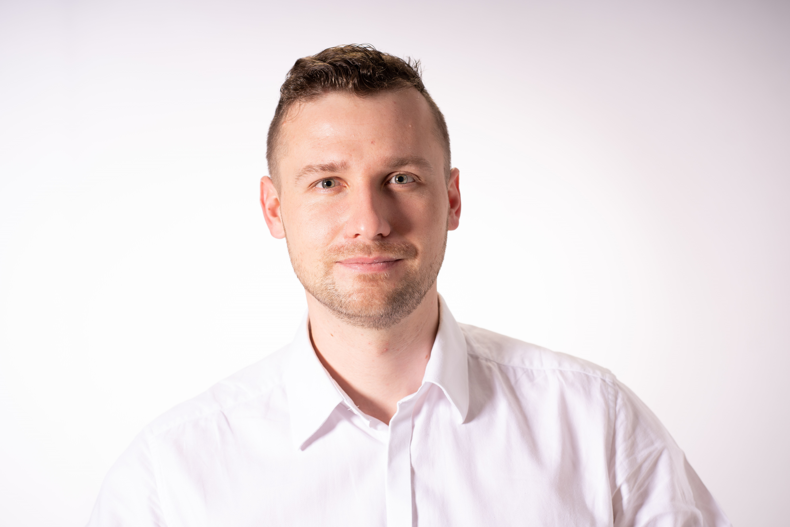
About Toms
Toms Voits is a Postdoctoral Researcher at UiT the Arctic University of Norway. He is affiliated with the Psycholinguistics of Language Representation (PoLaR) lab and the AcqVA Aurora Center in the Department of Language and Culture at UiT. His work is primarily focused on investigating the effects of bilingualism on neurocognition, with a particular interest in examining bilingualism as a contributing factor to cognitive and brain reserves in the later years of life.
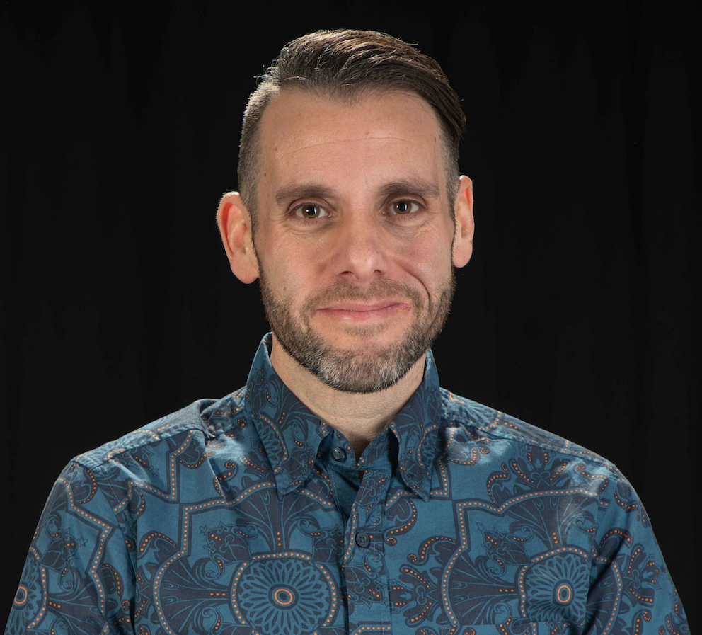
About Jason
Jason Rothman is Professor of Linguistics at UiT the Arctic University of Norway and Senior Researcher in Cognitive Science at Universidad Nebrija (Spain). He is deputy director of the AcqVA Aurora Center at UiT, where he co-leads the center’s theme/concentration on the Neurocognition of Bilingualism. Professor Rothman also co-directs the center’s Psycholinguistics of Language Representation (PoLaR) lab. A linguist by training, he has worked extensively on language acquisition, linguistic processing and language-associated links to domain general neurocognition across the lifespan of varioustypes of bi-/multilingual populations. He is founding editor of the journal Linguistic Approaches to Bilingualism and serves as executive editor of the book series Studies in Bilingualism.
Introducing Network Analysis (S. Musgrave)
A gentle introduction to networks
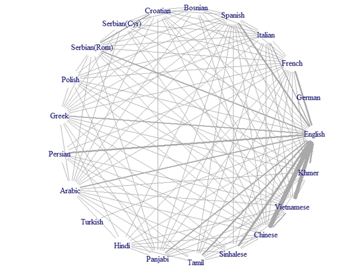
This talk was recorded Aug. 2, 2021, as part of the LADAL Opening Webinar Series 2021.
Recording on YouTube: https://youtu.be/QW0lVaHcNX4
Abstract
Linguists have adopted several methods from data science, but network analysis has been used rather less than others even though it is a useful tool. This presentation will introduce the basics of using network analysis, discussing the types of problems for which the method is useful, the kinds of data which are amenable to analysis, and the graphical outputs which can be achieved. These points will be illustrated with several examples from different areas of linguistic research, as well as with an example with data concerning a social network.
About Simon
Simon Musgrave was a lecturer in the Linguistics program at Monash University until the end of 2020. His research covers various areas in linguistics and sociolinguistics, linked by the themes of the use of computational tools in linguistic research and the relationship between Linguistics and Digital Humanities, an interest continued in his current work in the Linguistic Data Commons of Australia project.
Speech Recognition with Elpis (J. Wiles & B. Foley)
(Semi-)Automated speech recognition using Elpis
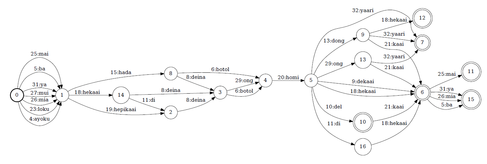
This talk was recorded Aug. 12, 2021, as part of the LADAL Opening Webinar Series 2021.
Recording on YouTube: https://youtu.be/9YjZH4lBco0
Resources: See here for a guide on how to use Elpis.
Abstract
Speech recognition (ASR) technologies can be useful to accelerate transcription of language recordings, and to provide new insights into corpora. ASR tools are available now for hundreds of languages from commercial providers and can be trained for languages that are not commercially supported. However, there are significant hurdles to using ASR tools, from the preparation of data through to the training of the systems. This presentation introduces the motivations and process of co-designing Elpis, a speech recognition system built to be usable by ordinary working linguits. We discuss some examples of using Elpis with a range of low-resource language corpora, and how the co-design process can be used to benefit other language technologies.
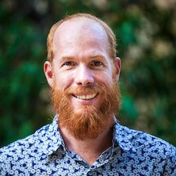
About Ben
Ben Foley is the project manager of CoEDL’s Transcription Acceleration Project (TAP). TAP brings cutting-edge language technology within reach of people working with some of the world’s oldest languages. A major focus of TAP is the development of user-friendly speech recognition tools. Ben’s previous experience with Aboriginal and Torres Strait Islander language resource development has resulted in apps and websites galore. Highlights include the Iltyem-iltyem sign language database and website, and the Gambay First Languages Map, showing the hundreds of languages in Australia.
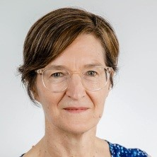
About Janet
Janet Wiles is a Professor in Human Centred Computing at the University of Queensland and leads the Future Technologies Thread of the ARC Centre of Excellence for the Dynamics of Language (CoEDL). She has 30 years’ experience in cross-disciplinary research and teaching, including artificial intelligence, language technologies and social robotics, leading teams that span engineering, humanities, social sciences and neuroscience.
Ben and Janet currently teach a cross disciplinary course Voyages in Language Technologies”* that introduces computing students to the diversity of the world’s languages, and state-of-the-art tools for deep learning and other analysis techniques for working with language data.
Societal Big Data (M. Laitinen)
Adding social information to societal big data?
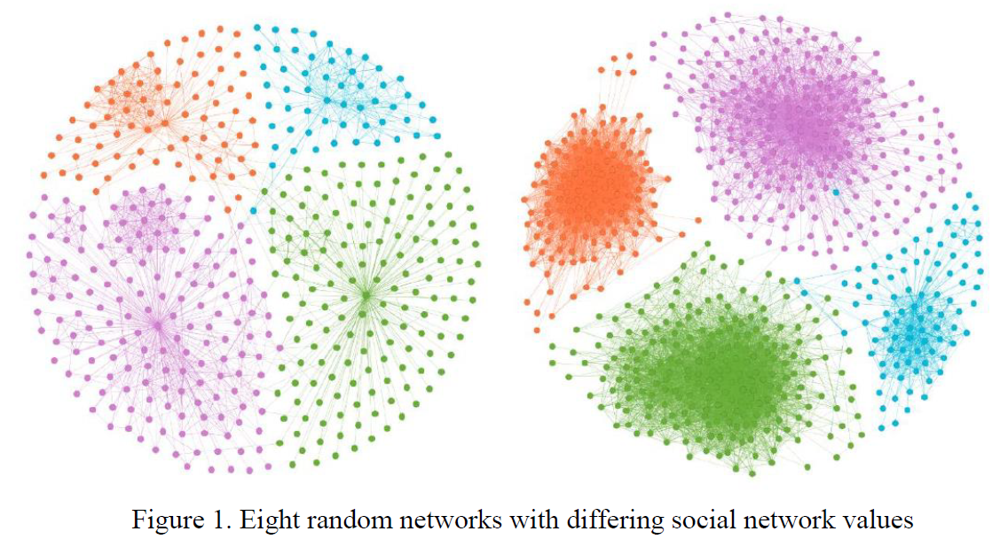
This talk was recorded Aug. 19, 2021, as part of the LADAL Opening Webinar Series 2021.
Recording on YouTube: https://youtu.be/kfb7xLC2nBs
Abstract
Societal big data today provides a large source of language data in naturalistic settings. Such data have substantially enlarged pools of evidence in various fields in social sciences and the humanities. In linguistics, one direct impact has been the emergence of computational sociolinguistics, a field that intersects sociolinguistics with computational techniques.
However, social big data have one major limitation, at least when it comes to computational sociolinguistics. This limitation, quite surprisingly, concerns the lack of social background information. Researchers have no direct access to background information (author’s gender, social layer, education, occupation, etc.), and it is difficult to combine evidence from social media with rich social information for the simple reason that such information is not available for proprietary reasons. If some social information is available, it is often self-reported and therefore prone to inaccuracies. Or, it is ethically unsustainable to link big language data with socio-cultural information (cf. the Cambridge Analytica scandal).
This talk introduces a method that is being developed in my SOCOS research group. The method builds on social network theory and utilizes freely available interaction data. These data can be quantified easily through a set of algorithms and used as proxies for social parameters. One downside is that it requires some degree of technical competence to extract these data, which can easily be accomplished through interdisciplinary partnerships in digital humanities environments.
About Mikko
Mikko Laitinen is Professor of English Language at the University of Eastern Finland. He obtained PhD in 2007 and has been a member of the Academy of Finland Center of Excellence in Research Unit for Variation, Contacts and Change (VARIENG) since 2000. He previously worked as Professor of English at Linnaeus University, where he is one of the two founding members of the Center of Data Intensive Sciences and Applications (DISA), a multidisciplinary big data research consortium that consists of scholars in the humanities, computer scientists, mathematicians, and social scientists. His research focuses on the role social networks in language variation and change, computational sociolinguistics, and digital humanities.
Data-Driven Learning (P. Crosthwaite)
Data-driven learning for younger learners: Boosting schoolgirls’ knowledge of passive voice constructions for STEM education
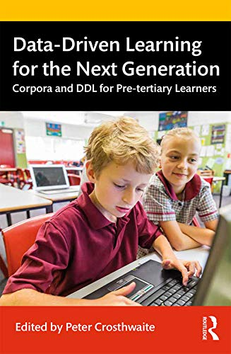
This talk was recorded Sep. 2, 2021, as part of the LADAL Opening Webinar Series 2021.
Recording on YouTube: https://youtu.be/JlHchgpzO3o
Abstract
This paper explores how corpus technology and DDL pedagogy can support secondary schoolgirls’ reporting of an observed science experiment through a written research report, focusing particularly on how corpora were used to develop receptive and productive knowledge of passive voice constructions. A pre-test of the grammaticality of passive constructions was conducted, alongside a diagnostic pre-instruction written report requiring the retelling of an observed science experiment were collected from 60 Year 9-10 girls at a high school in Australia. During a full 10-week term, students were given guided individual homework tasks and short in-class pair/group DDL activities focusing on passive voice constructions, using freely available online corpus applications such as SketchEngine. Following this treatment, a post-test was conducted while an additional written research report was collected. Questionnaire and interview data was also collected to determine the perceptions of younger female learners and their teachers regarding their engagement with corpora and DDL for improving knowledge and use of passive constructions over time. The data suggest that while the DDL treatment did not result in increased receptive knowledge of the grammaticality of passive voice constructions, their productive use of the passive was significantly improved. Moreover, when students were given the opportunity to use corpora to check their intuitions in the post-test, they produced accurate responses over 75% of the time. Qualitative stakeholder perceptions of improved disciplinary linguistic knowledge, increased data management skills, and positive engagement with “science” were also found in the survey/interview data, although a number of challenges at the technical and conceptual levels for DDL still remain.
About Peter
Peter Crosthwaite is Senior Lecturer in Applied Linguistics in the School of Languages and Cultures at the University of Queensland. Before he joined UQ, Peter was assistant professor at the Centre for Applied English Studies (CAES) at the University of Hong Kong. His areas of research and supervisory expertise include corpus linguistics and the use of corpora for language learning (known as data-driven learning), as well as English for General and Specific Academic Purposes. Peter is the author of the monograph Learning the language of Dentistry: Disciplinary corpora in the teaching of English for specific academic purposes which is part of Benjamins’ Studies in Corpus Linguistics series (with Lisa Cheung, published 2019), as well as the edited volumes Data Driven Learning for the Next Generation: Corpora and DDL for Pre-tertiary Learners (published 2019) and Referring in a second language: Reference to person in a multilingual world (with Jonathon Ryan, published 2020 with Routledge). Peter is also currently serving as the corpus linguistics section editor for Open Linguistics - an open access linguistics journal from De Gruyter, and he is on the editorial board of Applied Corpus Linguistics, a new journal covering the direct applications of corpora to teaching and learning.
Text Classification & Hate Speech (G. Wiedemann)
Text classification for automatic detection of hate speech, counter speech, and protest events

This talk was recorded Sep. 13, 2021, as part of the LADAL Opening Webinar Series 2021.
Recording on YouTube: https://youtu.be/2oLJNYl_Ipw
Additional Resources
Text Mining Tutorials: https://tm4ss.github.io
R package for active learning experiments: https://github.com/tm4ss/tmca.classify
Experiment code for reproducing the experiments from the Journal Article Proportional Classification Revisited: https://github.com/tm4ss/tmca.classify-experiments
Abstract
Social sciences have opened up to text mining, i.e., a set of methods to automatically identify semantic structures in large document collections. However, the methods have often been limited to a statistical analysis of textual data, strongly limiting the scope of possible research questions. The more complex concepts central to the social sciences such as arguments, frames, narratives and claims still are mainly studied using manual content analyses in which the knowledge needed to apply a category (i.e. to “code”) is verbally described in a codebook and implicit in the coder’s own background knowledge. Supervised machine learning provides an approach to scale-up this coding process to large datasets. Recent advantages in neural network-based natural language processing allow for pretraining language models that can transfer semantic knowledge from unsupervised text collections to specific automatic coding problems. With deep learning models such as BERT automatic coding of context-sensitive semantics with substantially lowered efforts in training data generation comes within reach to content analysis. The talk will introduce to the applied usage of these technologies along with two interdisciplinary research projects studying hate speech and counter speech in German Facebook postings, and information extraction for the analysis of the coverage of protest events in local news media.
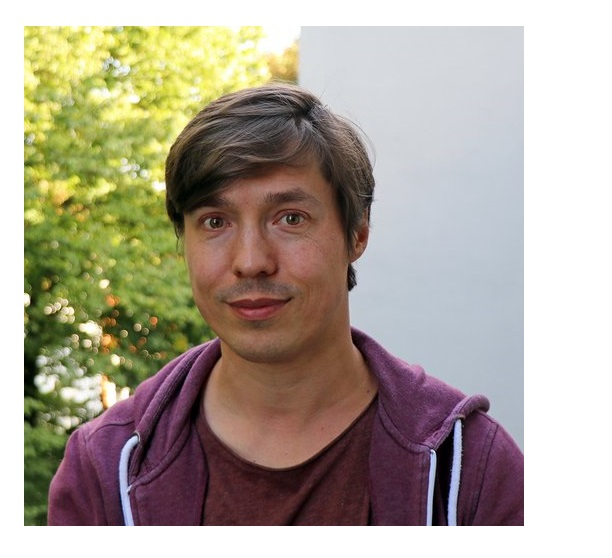
About Gregor
Gregor Wiedemann is working as Senior Researcher Computational Social Science at the Leibniz Institute for Media Research │ Hans Bredow Institute (HBI). Since September 2020, he heads the Media Research Methods Lab (MRML). His current work focuses on the development of methods and applications of natural language processing and text mining for empirical social and media research. Gregor Wiedemann studied political science and computer science in Leipzig and Miami, USA. In 2016 he received his doctorate from the Department of Computer Science at the University of Leipzig for his thesis on automation of discourse and content analysis using text mining and machine learning methods. Afterwards he worked as a postdoc in the NLP group of Computer Science Department at the University of Hamburg. Among other things, the resulting works are concerned with unsupervised information extraction to support investigative research in unknown document collections (see newsleak.io) and with the detection of hate and counter-speech in social media.
VARIENG (Nevalainen, Hiltunen & Liimatta)
Introducing the VARIENG research unit in Helsinki
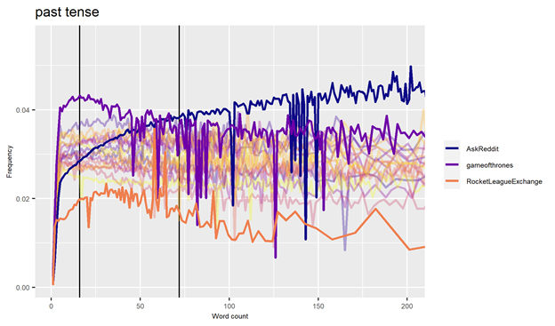
This talk was recorded Sep. 21, 2021, as part of the LADAL Opening Webinar Series 2021.
Recording on YouTube: https://youtu.be/rDuYGQkAtQg
Additional Resources
VARIENG website: https://www2.helsinki.fi/en/researchgroups/varieng
Corpus Resource Database (CoRD): https://varieng.helsinki.fi/CoRD/
Studies in Variation, Contacts and Change in English: https://varieng.helsinki.fi/series/
Abstract
Our presentation falls into three parts. It begins with Terttu’s brief introduction to the Research Unit for Variation, Contacts and Change in English (VARIENG), its past, present and future, and its current open-access resources. In addition, the talk presents two short cases studies touching on the methodology of corpus linguistics from different perspectives. The first one (by Turo) discusses how the availability of massive text archives may hold great promise for corpus linguistic work, but they may also present considerable methodological challenges for users (see e.g. Hiltunen, McVeigh, and Säily). In focus here are some specific problems related to the diachronic British Library Newspapers database, and how those problems might be addressed in the context of register analysis and the study of linguistic variation. The second case study (by Aatu) looks into the role of text length in register-internal variation by analyzing a big data sample of social media comments. Different registers seem to exhibit different kinds of internal functional variation by text length (as shown by the illustration).
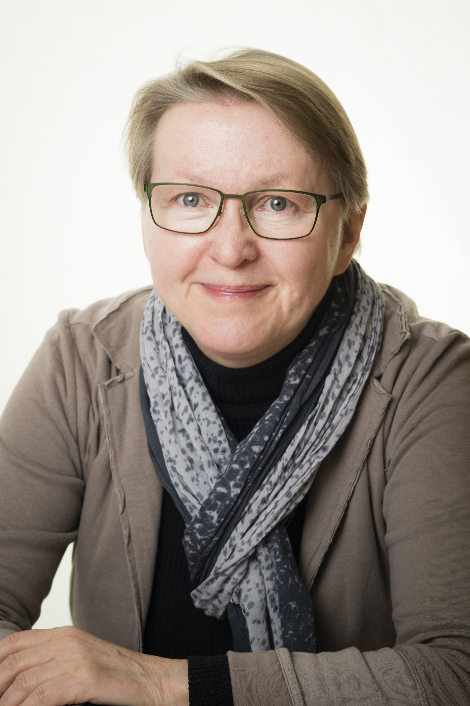
About Terttu
Terttu Nevalainen is the Director of the VARIENG Research Unit. Her research interests include historical sociolinguistics, variation studies, corpus linguistics and digital humanities. She is one of the designers and compilers of the Helsinki Corpus of English Texts and of the Corpus of Early English Correspondence.
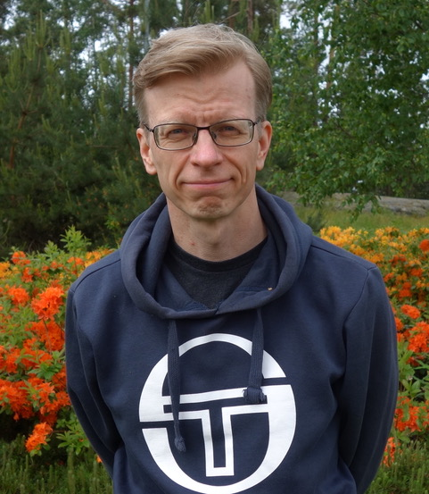
About Turo
Turo Hiltunen works as senior lecturer in English at the Department of Languages, University of Helsinki, Finland. His research interests include corpus linguistics and register analysis, and the grammatical and phraseological variation of scientific English past and present, compilation of specialised corpora, and democratisation in the context of parliamentary discourse.
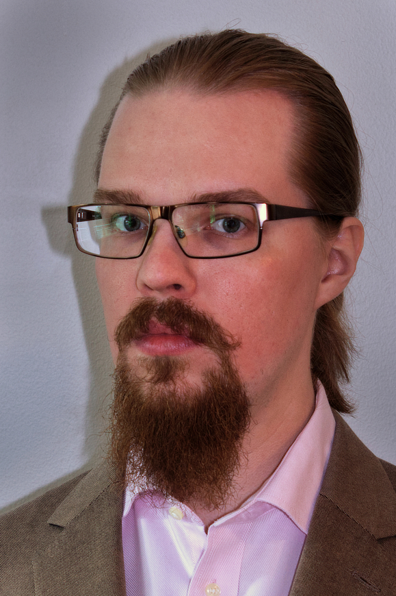
About Aatu
Aatu Liimatta is researching register variation on social media for his PhD. His interests include register and functional variation, computational methods, and big linguistic data.
AntConc 4.0 (L. Anthony)
An Introduction to AntConc 4: Developing a general-purpose corpus toolkit for a broad user base
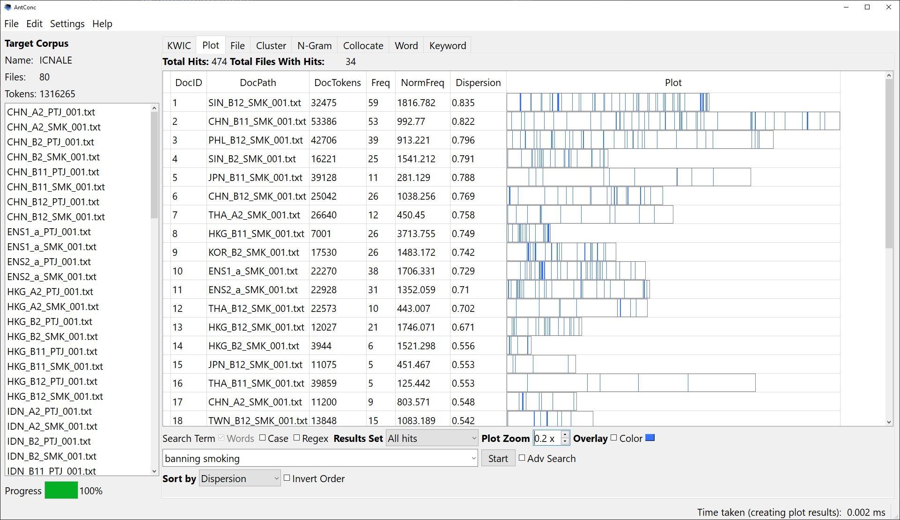
This talk was recorded Sep. 27, 2021, as part of the LADAL Opening Webinar Series 2021.
Recording on YouTube: https://youtu.be/F_eHRWxCZnw
Additional Resources
Laurence Anthony’s website (software subpage)
Abstract
AntConc is a widely used desktop corpus tool that has been downloaded over 2.5 million times since its first release in the early 2000s. Today, it is used by researchers, teachers, and learners in over 140 countries and its tutorial videos have been viewed over 500,000 times. AntConc has a relatively easy-to-use design and works especially well with small corpora of under a few million words. However, it begins to struggle when processing larger corpora and offers relatively few statistics for advanced analysis. In this talk, I will introduce a new version of AntConc (version 4.0) that has been built from the ground up to addresses these limitations. The new version includes features that allow the software to be easily extended, and it produces results in a way that allows for smooth data interoperability with other tools and scripts. I will also discuss various issues that need to be considered when developing software for a broad user base, which should be of interest to both users and developers of software tools.
About Laurence
Laurence Anthony is Professor of Applied Linguistics at the Faculty of Science and Engineering, Waseda University, Japan. He has a BSc degree (Mathematical Physics) from the University of Manchester, UK, and MA (TESL/TEFL) and PhD (Applied Linguistics) degrees from the University of Birmingham, UK. He is the current Director of the Center for English Language Education in Science and Engineering (CELESE), which runs discipline-specific language courses for the 10,000 students of the faculty. His main research interests are in corpus linguistics, educational technology, and English for Specific Purposes (ESP) program design and teaching methodologies. He received the National Prize of the Japan Association for English Corpus Studies (JAECS) in 2012 for his work in corpus software tools design.
Distributional Semantics (G. Desagulier)
Doing diachronic linguistics with distributional semantic models in R
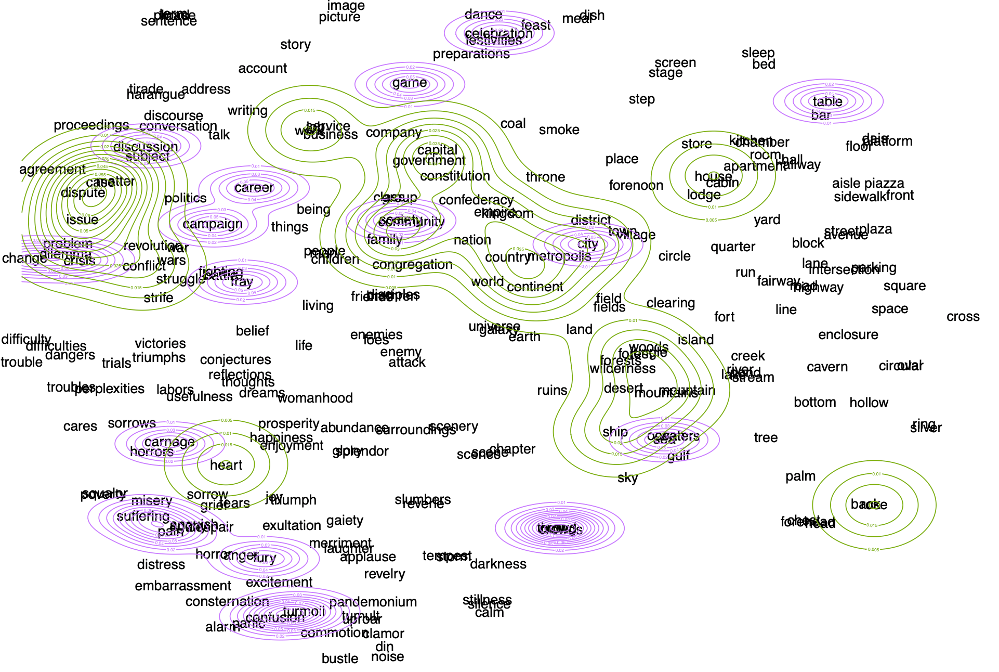
This talk was recorded Sep. 30, 2021, as part of the LADAL Opening Webinar Series 2021.
Recording on YouTube: https://youtu.be/Cof8lWdlRqI
Resources:
Link to Guillaume’s blog Hypotheses
Link to the latest issue of CogniTextes
Abstract
Computational linguistics offers promising tools for tracking language change in diachronic corpora. These tools exploit distributional semantic models, both old and new. DSMs tend to perform well at the level of lexical semantics but are more difficult to fine-tune when it comes to capturing grammatical meaning.
I present ways in which the above can be improved. I start from well-trodden methodological paths implemented in diachronic construction grammar: changes in the collocational patterns of a linguistic unit reflect changes in meaning/function; distributional word representations can be supplemented with frequency-based methods. I move on to show that when meaning is apprehended with predictive models (e.g. word2vec), one can trace semantic shifts with greater explanatory power than with count models. Although this idea may sound outdated from the perspective of NLP, it actually goes great ways from the viewpoint of theory-informed corpus linguistics.
I illustrate the above with several case studies, one of which involves complex locative prepositions in the Corpus of Historical American English. I conclude my talk by defending the idea that NLP, with its focus on computational efficiency, and corpus-linguistics, with its focus on tools that maximize data inspection, have much to gain from getting closer.
About Guillaume
Guillaume Desagulier is Associate Professor of Linguistics at Paris 8 University, France, and a researcher at the MoDyCo laboratory of the University of Paris Nanterre. He is the recipient of a 5-year honorary position at the Institut Universitaire de France, a division of the French Ministry of Higher Education that distinguishes university professors for their research excellence.
Guillaume’s research interests are at the crossroads of cognitive linguistics and corpus linguistics. More specifically, he uses corpus-linguistics and statistical techniques to test usage-based hypotheses. He has published on modality, evidentiality, and intensification from a construction-grammar perspective.
In 2017 Guillaume published a reference textbook on corpus linguistics with R: Corpus Linguistics and Statistics with R (New York: Springer). The same year, he opened a research blog: Around the word, A corpus linguist’s notebook, where he has since recorded reflections and experiments on his practice as a usage-based corpus linguist (https://corpling.hypotheses.org/).
Usage-Based Language Learning (L. Janda)
Strategic targeting of rich inflectional morphology for linguistic analysis and L2 acquisition
This talk was recorded Oct. 7, 2021, as part of the LADAL Opening Webinar Series 2021.
Recording on YouTube: https://youtu.be/FP8x1Euf7SI
Resources:
SMARTool: SMARTool is a language-learning software tool assisting English-speaking learners of Russian.
TROLLING is a repository of data, code, and other related materials used in linguistic research. The repository is open access, which means that all information is available to everyone. All postings are accompanied by searchable metadata that identify the researchers, the languages and linguistic phenomena involved, the statistical methods applied, and scholarly publications based on the data (where relevant).
Abstract
Many languages have rich inflectional morphology signaling grammatical categories such as case, number, tense, etc. Rich morphology presents a challenge for L2 learners because even a basic vocabulary of a few thousand words can entail mastery of over 100,000 word forms. However, only a handful of the potential forms of a given word occur frequently, while the remainder are rare. Access to digital corpora makes it possible to determine which forms of any given word are of highest frequency, as well as what grammatical and collocational contexts motivate those few frequent forms, facilitating strategically focused language learning tools. Corpus analysis of the frequency distributions of inflectional forms provide linguists with added insights into the function of languages. The results achieved primarily by using correspondence analysis of Russian material are potentially portable to any language with rich inflectional morphology.

About Laura
In the Cold War era, Laura Janda combined study of Slavic linguistics at Princeton and UCLA with US-government-funded adventures as an exchange student behind the Iron Curtain in countries that have since changed their names: USSR, Czechoslovakia, and Yugoslavia. After over two decades at the University of Rochester and UNC-Chapel Hill, she moved to the University of Tromsø in 2008. Laura Janda was an early adopter of Cognitive Linguistics in the 1980s and has explored quantitative methods since 2007. Her research focuses primarily on the morphology of Slavic languages, with various admixtures (North Saami, conlangs, political discourse).
Analyzing Historical Publications (T. Säily)
Language variation and change in eighteenth-century publications and publishing networks
This talk was recorded Oct. 15, 2021, as part of the LADAL Opening Webinar Series 2021.
Recording on YouTube: https://youtu.be/B3qar4mYE4k
Resources:
Helsinki Computational History Group
Research Unit for Variation, Contacts and Change in English
Project website: https://blogs.helsinki.fi/c18-publishing/
Abstract
This talk introduces our new project, Rise of Commercial Society and Eighteenth-Century Publishing, by discussing its premises and a pilot study. Combining historical sociolinguistics with intellectual history, book history and data science, the project studies the eighteenth-century print media and publishing networks that enabled the rise of commercial society and its conceptualization in the eighteenth-century Anglophone world. The chief focus is on Scottish, transatlantic and French influences on British print media.
A key innovation in our project is that we connect the study of eighteenth-century publishing networks with that of language variation and change to gain results that are of interest to both linguists and historians. To do this, we link enriched bibliographic metadata with full-text sources for historical-sociolinguistic analysis. Our main interest is in charting the use and spread of new vocabulary in the networks to better understand how the discourse develops over time. Instead of focusing on well-known authors, we will identify influencers in a data-driven way; these can also be printers or publishers. By combining network analysis with text mining and social metadata on the actors, we are able to conduct large-scale analyses of how linguistic and stylistic changes spread across social groups in eighteenth-century public discourse.
About Tanja
Tanja Säily is a tenure-track assistant professor in English language at the University of Helsinki. Her research interests include corpus linguistics, digital humanities, historical sociolinguistics, and linguistic productivity. She is also interested in the social embedding of language variation and change in general, including gendered styles in the history of English and extralinguistic factors influencing language change. Her overarching aim is to develop new ways of understanding language variation and change, often in collaboration with experts from other fields. Her current project combines historical sociolinguistics, intellectual history, book history and data science to analyse eighteenth-century publications and publishing networks.
Git and GitHub (S. Guillou)
Git and GitHub/Gitlab for versioning and collaborating

This talk was recorded Oct. 18, 2021, as part of the LADAL Opening Webinar Series 2021.
Recording on YouTube: https://youtu.be/MbRNbJUY0aE
Resources: GitHub repo for this webinar
Abstract
Git is a tool for versioning of and collaborating on any text-based file. Widely used in software development, it is now adopted in many different settings, from document versioning to data analysis management. It is also at the centre of major platforms like GitHub and GitLab, used by millions to share and collaborate on code and documents.
In this workshop, you will learn about: * The main commands used in a git workflow
How to publish your work online
How to collaborate on a GitHub repository
If you would like to follow along, please do the following before attending:
Install Git on your computer (here are OS-specific instructions)
Create a GitHub account (or GitLab if you want an alternative)
How to publish your work online
How to collaborate on a GitHub repository
Install Git on your computer (here are OS-specific instructions)
Create a GitHub account (or GitLab if you want an alternative)
About Stéphane
Stéphane Guillou has worked for the last 10 years at the University of Queensland (UQ). After completing a master’s degree in plants science and ecology in France, he worked in research around the topic of sustainable agriculture. In 2018, a drastic move to a Technology Trainer position at the Library allowed him to share data analysis best practice skills, and promote Open Source tools for research. He is motivated by the principles of Open Science and the opportunities an increasingly collaborative research ecosystem offers.
Replicability & Robustness (J. Flanagan)
Reproducibility, Replicability, and Robustness
This talk was recorded Oct. 28, 2021, as part of the LADAL Opening Webinar Series 2021.
Recording on YouTube: https://youtu.be/1zaKr2B2YBU
Resources: Reproducible research: Strategies, tools, and workflows
Abstract
Scientific progress has long rested on the often unstated assumptions that research is reproducible (i.e., independent analysts can recreate the results claimed by the original authors by using the original data and analysis techniques), replicable (the results claimed by analysts extends beyond the original data to some wider population or phenomenon), and robust (the findings reported by analysts are not ovely sensitive to assumptions in their model). Recently, however, there have been growing concerns about the extent to which current research practices can meet these assumptions. In this talk, I’ll present a high-level discussion of these issues, defining the key terms, demonstrating how and why questions have been raised about why work may not be as reproducible, replicable, or robust as we may wish, and offer some tentative suggestions for and examples of improving the reproducibility, replicability, and robustness of linguistic research in the future.
About Joe
Joseph Flanagan is a University Lecturer in Languages/English Studies at the University of Helsinki where he is also supervisor for the doctoral program in Philosophy, Arts, and Society. Joe’s research interests primarily center on issues related to English phonetics and phonology, reproducible research, and the digital humanities. Teaching-wise, he is especially interested in exploring how digital technology can enhance student learning.
Joe has presented, given talks, and co-organized several workshops on reproducibility and replicability in (corpus) linguistics at international conferences such as the 6th Meeting of the International Society for the Linguistics of English (ISLE6) and ICAME42.
Linguistic Phylogenetics (J. Macklin-Cordes & E. Round)
Phylogenetic comparative methods: What all the fuss is about, and how to use them in everyday research
This talk was recorded Nov. 4, 2021, as part of the LADAL Opening Webinar Series 2021.
Recording on YouTube: https://youtu.be/yJeQ6AGDLK0
Resources: LADAL tutorial on Phylogentics for language data
Abstract
In this talk, we attempt two tasks. Firstly, we dispel some of the mystery around phylogenetic comparative methods and highlight their fundamental relationship to matters of enduring concern in linguistic typology. Secondly, we aim to show how linguists can carry out essential tasks using phylogenetic methods, easily.
We begin by laying out the historical commonalities between typology and comparative biology, and the breakthrough insight that makes phylogenetic comparative methods distinct. This is followed by an overview of some fundamental phylogenetic concepts and tools. Finally, we illustrate these with a typological case study from the Pama-Nyungan languages. Our talk is accompanied by online interactive materials, demonstrating how phylogenetic comparative methods can be incorporated into everyday typological workflows.
About Jayden
Jayden Macklin-Cordes is a postdoctoral researcher in linguistics at the CNRS Dynamics of Language Lab, Lumière University Lyon 2. He recently completed his PhD at The University of Queensland as a member of the Ancient Language Lab. Jayden specialises in historical linguistics and typology, particularly using phylogenetic and quantitative methods.
About Erich
Erich Round is British Academy Global Professor of linguistics at the Surrey Morphology Group, University of Surrey, UK, and director of the Ancient Language Lab at the University of Queensland. His research focuses on linguistic evolution and typology, especially in the domains of morphology and phonology. Erich also specialises in the Tangkic languages of Queensland and the phonologies of Australian Indigenous languages.
Analyzing Emigrant Letters (C. P. Amador-Moreno)
Tracking Irish English through a corpus of emigrants’ letters
This talk was recorded Nov. 11, 2021, as part of the LADAL Opening Webinar Series 2021.
Recording on YouTube: https://youtu.be/YBC_y12bcF8
Abstract
In recent years, linguists have focused on reconstructing earlier regional and social varieties of English through the quantitative analysis of emigrant letters and other written documents. As demonstrated in these studies this type of material can provide important, quantifiable data on certain features proper to a particular variety, thus allowing for the reconstruction of some of the features proper to that variety prior to the collection of spoken data.
The aim of this talk is to present the Corpus of Irish English Correspondence (CORIECOR), a corpus of personal letters written between 1750-1940. The corpus contains some 4700 texts (approx. 3 million words), of which 4100 (2.5m words) are correspondence maintained between Irish emigrants and their relatives, friends and contacts. The letters were sent mainly between Ireland and other countries such as the United States, Canada, Great Britain, New Zealand, Argentina and Australia, and therefore provide an empirical base for studies of historical change in Irish English and its contribution to other major overseas varieties. In order to explore the use of a corpus like this for the study of Irish English, the talk will show some recent findings.
About Carolina
Carolina P. Amador-Moreno is Professor of English Linguistics at the University of Bergen. She has held different teaching positions at the University of Extremadura (Department of English), the University of Limerick (Department of Languages and Cultural Studies), and University College Dublin (English Department). Her research interests centre on the English spoken in Ireland and include historical linguistics, stylistics, discourse analysis, corpus linguistics, sociolinguistics, and pragmatics. Her publications include articles and chapters dealing with these topics. She is the author, among others, of Orality in written texts: Using historical corpora to investigate Irish English (1700-1900), Routledge (2019); An Introduction to Irish English, Equinox (2010); the co-edited volumes Irish Identities: Sociolinguistic Perspectives (Mouton de Gruyter, 2020); Voice and Discourse in the Irish Context (Palgrave-Macmillan, 2017); Pragmatic Markers in Irish English (John Benjamins, 2015). She’s an associate member of CALS (Centre for Applied Language Studies), IVACS (Inter-Variational Applied Corpus Linguistics network), both at the University of Limerick, and LINGLAP (the Research Institute for Linguistics and Applied Languages), at the University of Extremadura, which she was Director of until August 2020.
AARNet & CloudStor (S. King)
AARNet, CloudStor and SWAN: easy storing and sharing of research data and resources
This talk was recorded Nov. 18, 2021, as part of the LADAL Opening Webinar Series 2021.
Recording on YouTube: https://youtu.be/YfiV4QWzS6I
Resources: https://jupyterbook.org/intro.html
Abstract
This webinar introduces AARNet, Australia’s Academic Research Network, and CloudStor, a research-specific sync, store and share platform. Discover more about the CloudStor interface and its associated tools and services for managing active research data. Learn how to organise, maintain, store and analyse active data, and understand safe and secure ways of sharing and storing data. This session will also introduce SWAN, the Service for Web-based Analysis, and Jupyter Notebooks, a digital tool that has exploded in popularity in recent years for those working with data. This will be an introductory session for those who are brand new, have little or no knowledge of coding and computational methods in research, but would like to know more about how to get started.
About Sara
Sara King is the Training and Engagement Lead at Australia’s academic and research network provider, AARNet. She has extensive experience in engagement and training, with expertise in research data and technologies in the Humanities and Social Science (HASS) research areas. Prior to eResearch she worked for almost a decade at the National Archives of Australia and a few years in a public library. She has a PhD in Migration Studies and is a little bit obsessed with the idea of knitting as a form of coding.